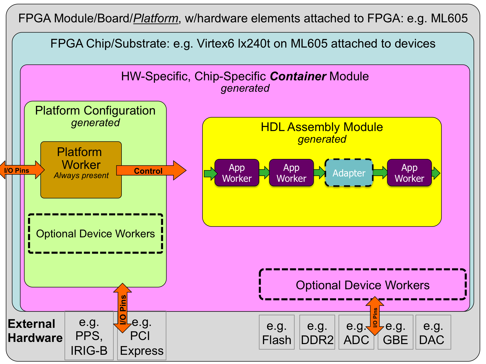
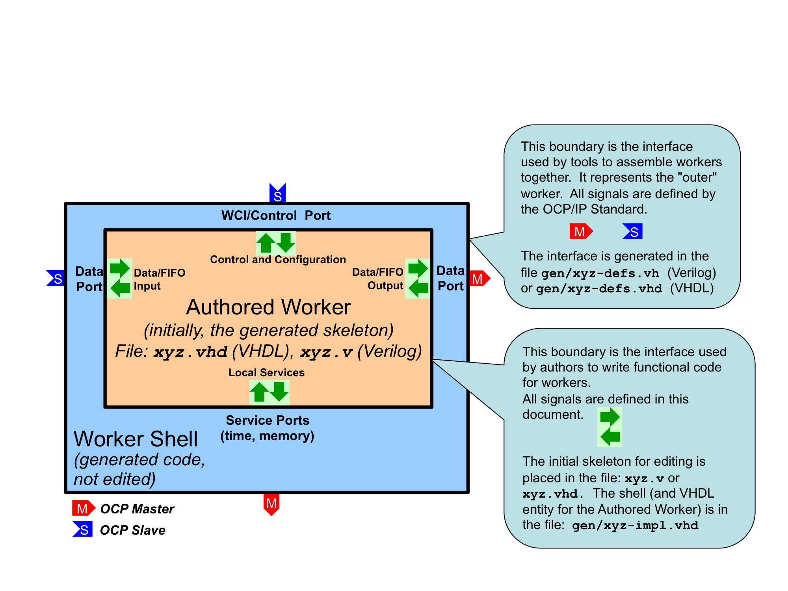
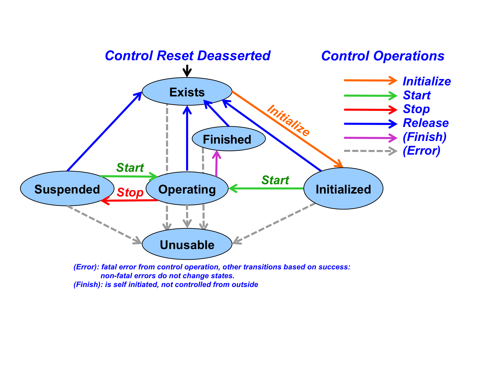
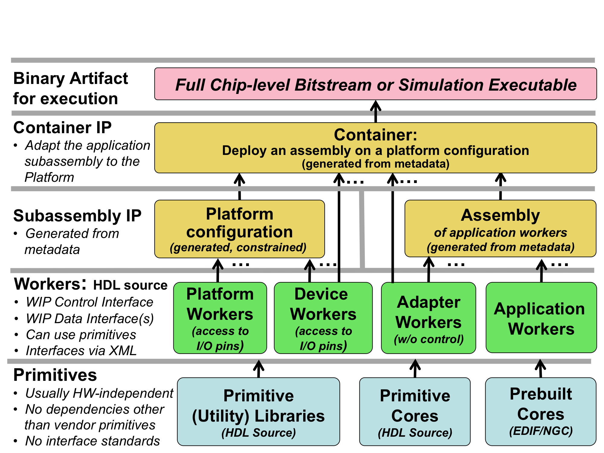
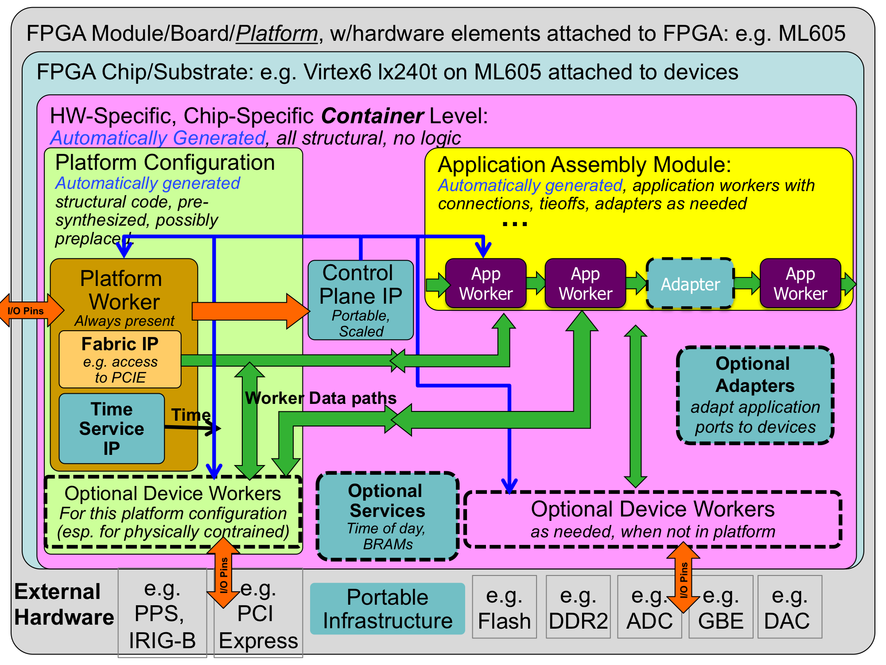
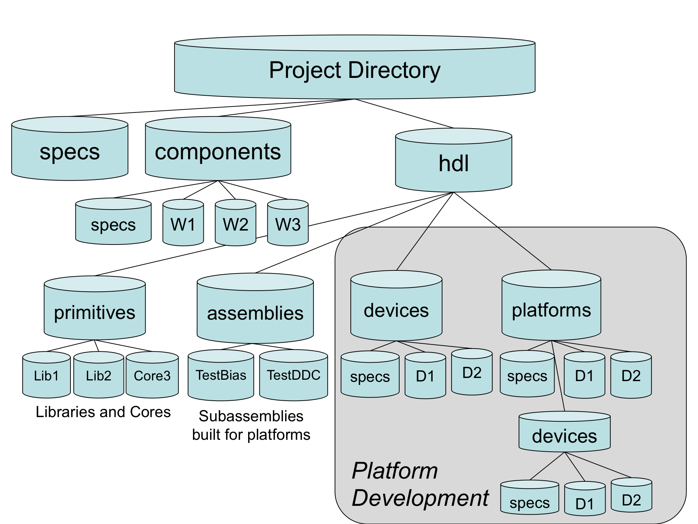
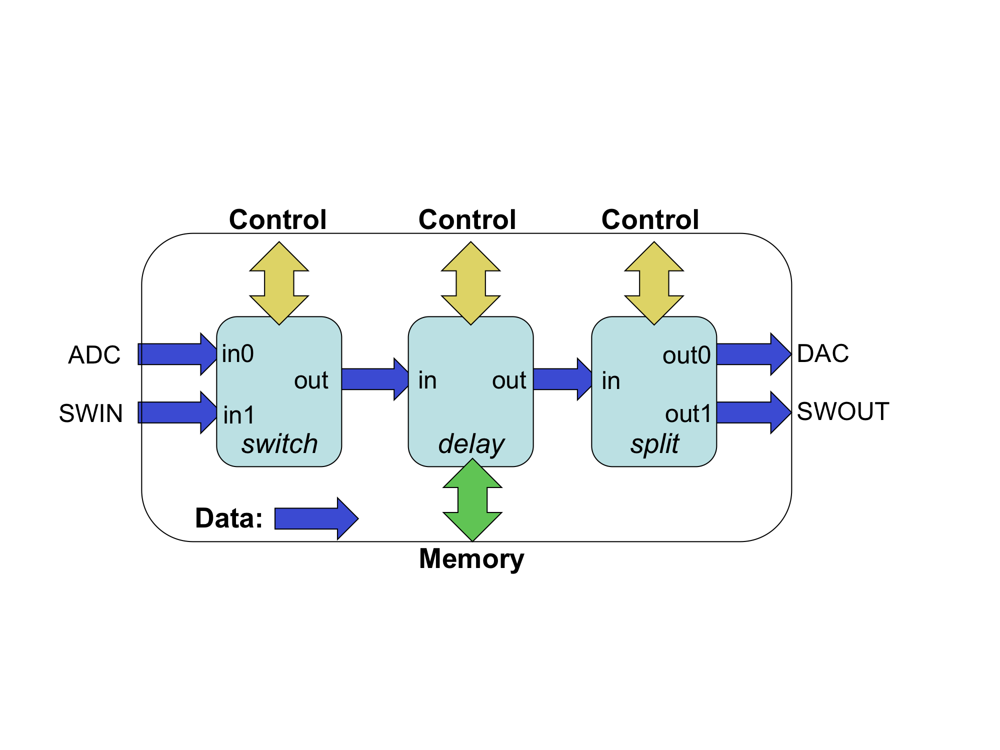
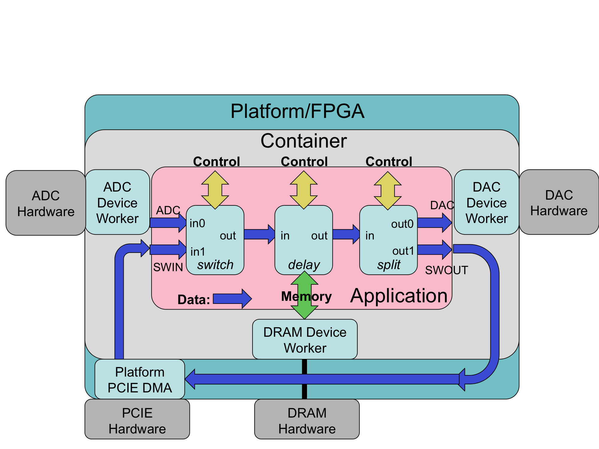

OpenCPI
HDL Development Guide
DRAFT
Revision History
|
Revision |
Description of Change |
Date |
|
1.01 |
Creation from content in previous OpenCPI Component Development document |
2016-02-1 |
|
1.02 |
Add new content to be consistent with current system as of February 2016 |
2016-02-23 |
|
1.03 |
Processed review comments for 3 reveiwers |
2016-02-24 |
Table of Contents
2 Overview
3.2 Worker Makefile
3.3 HDL Worker Description File: the OWD XML file.
3.3.1 HDL Worker OWD Top Level Attributes
3.3.2 Attributes of Worker Interfaces
3.3.3 Clocking Elements and Attributes
3.4 The Authored Worker: the VHDL architecture or Verilog module body
3.4.1 Signal naming conventions and data types
3.4.2 The Control Interface to the HDL worker.
3.4.3 HDL Worker Data Interfaces for OCS Data Ports
3.4.4 Time Service Interface
3.4.5 Memory Service Interfaces
4.4 HDL Search Paths when Building
4.4.1 Searching for HDL Primitives
4.4.2 Searching for XML files (OCS, OPS) when building workers
4.4.3 Searching for Workers in Component Libraries
5.1.1 Package Declarations for Primitive Libraries
5.1.2 Source File Ordering in HDL Primitive Libraries
5.1.3 Exporting and using the Results of Building HDL Primitive Libraries
6 HDL Assemblies for Creating Bitstreams/Executables
6.2 The Makefile for Building an Assembly
6.3 Specifying the Containers that Implement the Assembly on Platforms
6.4.1 Service connections in a container
6.4.2 Preparing the Bitstream/Executable Artifact file
8.2 Ethernet-based HDL devices
9 The ocpihdl Command Line Utility for HDL Development
9.1 General, non-Worker Commands for the ocpihdl utility
9.1.1 admin command – Print the device’s administrative information
9.1.2 bram command – Create a configuration BRAM file from an XML file
9.1.3 deltatime command – Perform time synchronization test on device.
9.1.4 emulate command – emulate a network-based device (admin space only)
9.1.5 ethers command – display available (up and connected) network interfaces
9.1.6 probe command – test existence and availability of device
9.1.7 load command – load bitstream
9.1.8 getxml command – retrieve XML metadata from device
9.1.9 radmin command – read a specific address in device’s admin space
9.1.10 reset command – perform soft reset on device
9.1.11 rmeta command – read specific addresses in the metadata space of the device
9.1.12 search command – search for all available HDL devices
9.1.13 simulate command – run a simulation server for a specific simulation platform
9.1.14 unbram command – create an XML file from a config BRAM file
9.1.15 wadmin command – write specific addresses in the device’s admin space
9.1.16 settime command – set device’s time from system time
9.2 Worker Commands: commands that operating on individual workers
9.2.1 get command — get all or single worker instance property information
9.2.2 set command — set property value in a worker instance
9.2.3 control command — change control state of worker instance
9.2.4 status command — display the status of a worker instance
9.2.5 Primitive worker commands using worker indices.
9.2.6 wclear command – clear a worker’s error registers
9.2.7 wdump command – dump a worker’s status registers (not properties)
9.2.8 wop command – perform a control operation on a worker
9.2.9 wread command – read a worker’s configuration property space
9.2.10 wreset command – assert reset for a worker
9.2.11 wunreset command – deassert reset for a worker
9.2.12 wwctl command – write a worker’s control register
9.2.13 wwpage command – write a worker’s window/page register
9.2.14 wwrite command – write a worker’s configuration property space
This document depends on several others. Primarily, it depends on the OpenCPI Component Development Guide (CDG), which describes concepts and definitions common to all OpenCPI authoring models.
Table 1: References to Related Documents
|
Title |
Published By |
Link |
|
OpenCPI Overview |
Public URL: https://github.com/opencpi/opencpi/raw/master/doc/pdf/OpenCPI_Overview.pdf |
|
|
OpenCPI Component Development Guide |
Public URL: http://www.opencpi.org/doc/pdf/OpenCPI_Component_Development.pdf |
|
|
OpenCPI RCC Development Guide |
Public URL: https://github.com/opencpi/opencpi/raw/master/doc/pdf/OpenCPI_RCC_Development.pdf |
This document describes how to develop component implementations, known as HDL workers, for FPGAs, using the Hardware Description Language (HDL) Authoring Model. Workers are typically created in a component library, so that they are available for OpenCPI application developers and users.
Some knowledge of FPGA terminology is assumed here, but this document is also useful for non-FPGA developers in understanding the OpenCPI FPGA development process.
This document builds on the information provided in the OpenCPI Component Development Guide (CDG), which introduces concepts and processes used for OpenCPI component development in general.
In addition to describing how to develop HDL workers, this document also describes:
how to create HDL primitive libraries, which are libraries of smaller/simpler reusable code modules sometimes used to build HDL workers
how to create HDL primitive cores, which are prebuilt and possibly pre-synthesized modules sometimes incorporated into HDL workers
how to assemble a group of connected HDL workers to form an HDL assembly, which is realized in a complete FPGA bitstream.
HDL assemblies enable an FPGA to execute a subset of the components specified in an OpenCPI application. I.e., when an OpenCPI application uses an FPGA, it is using it to execute some of the components specified in the application, with the others executing on other processors possibly using other authoring models.
For HDL development, the OpenCPI CDK also relies on technology-specific FPGA synthesis and simulation tools (e.g. Xilinx XST and Isim, Altera Quartus, Modelsim etc.).
The following sections describe the development of HDL workers, primitives (core and libraries), assemblies and bitstreams to support the execution of parts of component-based applications on FPGAs. All these terms are prefixed with HDL here to avoid confusion when they are used elsewhere.
HDL Authoring Model: the OpenCPI authoring model targeting Hardware Description Languages that are appropriate for FPGA development, currently using VHDL, with some legacy support for Verilog. New HDL workers should be written in VHDL. Full support for Verilog and System-Verilog is not currently supported.
HDL Target: a particular type of FPGA device, usually what is considered a part family, that is the target of compilation or synthesis, where the result can be used for any architecturally similar device. Examples are “virtex6”, or “stratix4”, or “zynq”. Simulators are also HDL targets.
HDL Worker: an HDL implementation of a component specification, with the source code written according to HDL authoring model. While most HDL workers are application workers (usable in portable applications), a special type is device workers which are for controlling hardware physically attached to the FPGA. For application workers, it is common and recommended to have an RCC worker that also implements the same spec.
HDL Primitive: an HDL assets that is lower level than workers, that is used as a building block for workers. HDL primitives can either be libraries or cores.
HDL Primitive Library: a collection of low level modules compiled from source code that can be referenced in HDL worker code. An HDL worker declares which HDL primitive libraries it draws modules from.
HDL Primitive Core: a low level module that may be built and/or synthesized from source code, or imported as presynthesized and possibly encrypted from 3rd parties, or generated by tools like Xilinx CoreGen or Altera MegaWizard. An HDL worker declares which primitive cores it requires (and instantiates).
HDL Assembly: a composition of connected HDL workers that are built into a complete FPGA configuration bitstream, acting as an OpenCPI artifact. The resulting bitstream is executed on an FPGA to implement some part of (some of the components of) the overall OpenCPI application.
HDL Platform: an OpenCPI platform based on an FPGA that is enabled to host OpenCPI HDL workers. Simulators are also considered HDL platforms.
HDL Platform Worker: a specific type of HDL worker providing infrastructure for implementing control/data interfaces to devices and interconnects external to the FPGA (e.g. PCI Express, Clocks). See the HDL Platform and Device Development section.
HDL Platform Configuration: a prebuilt (presynthesized) assembly of device-level HDL workers that represent a particular configuration of device support modules for a given HDL platform. See the HDL Platform and Device Development section.
HDL Container: a complete design for an entire FPGA, which includes an HDL assembly and an HDL platform configuration combined in a specified fashion.
The following diagram shows the relationships among the above:

Figure 1: HDL Hierarchy
HDL development in OpenCPI includes both application workers in a component library, which perform functions independent of any specific hardware attached to the FPGA, as well as device workers that are designed to support specific external hardware such as ADCs, flash memories, I/O devices, etc.
HDL device workers are developed as part of enabling an HDL platform (an FPGA on a particular board) for OpenCPI. See the HDL Platform and Device Development section.
The sections below for HDL/FPGA development are:
Developing application workers in a component library
The HDL Build Process: building for different target devices and platforms
The HDL Build Hierarchy: how whole device “bitstreams” are created.
This section describes how to write an HDL worker, and defines what distinguishes HDL worker development from developing workers using other authoring models. It builds on the worker development section in the Component Development Guide (CDG) that describes what is common to building workers for all authoring models.
HDL workers can consist of a single standalone source code module. They can also reference and instantiate lower level models: HDL primitive libraries and HDL primitive cores. In either case a worker is compiled and (when appropriate) synthesized for a given HDL target, as described in detail in the HDL Build Targets section. HDL worker source code cannot reference other workers.
The process of writing a new HDL worker (after the OCS exists), starts with using the ocpidev create worker command, as described in the CDG, to create the worker's directory and its initial content, usually as a subdirectory of a component library. This command can be executed in a project's directory, a component library's directory or even a completely separate directory not part of any pre-existing library or project. The name of an HDL worker always has the .hdl suffix, and the language must be specified as VHDL or Verilog. Languages are case insensitive. The default is vhdl. Here are some examples of using ocpidev to create HDL workers:
ocpidev create worker xyz.hdl -L vhdl
ocpidev -v -l dsplib create worker
ocpidev -S fft2d-spec create worker fft.hdl
As described in the CDG, this will create an initial worker description XML file (OWD), <worker>.xml, in the worker directory, which is subsequently edited for worker-specific attributes. Similarly, a Makefile is also created in the worker's directory, which may also be edited to enter worker-specific non-default build options. Creating an HDL worker also generates various files in the worker's gen subdirectory, including the code skeleton file which is initially copied to the <worker>.<language-suffix> in the worker's directory. The first ocpidev command above would result in the following directory tree for the worker:
xyz.hdl/
Makefile # Makefile for this worker
xyz.xml # OWD for this worker
xyz.vhd # editable source code for this worker
gen/xyz-skel.vhd # initial skeleton for this worker
xyz-defs.vhd # definitions enabling instantiation
xyz-impl.vhd # the generated shell of the worker
None of the files in the gen subdirectory should be edited. Since this directory and its contents are all generated by tools, all are deleted when the make clean command is issued here or at the project or library level. For HDL workers using VHDL, the initial worker code file (xyz.vhd), that you must subsequently edit, contains only the architecture of the worker. The entity declaration of the worker was automatically generated for you, and is found in the generated file gen/xyz‑impl.vhd.
The above command establishes the worker’s directory (xyz.hdl), its Makefile, its Worker description file (xyz.xml), and its initial source code file (xyz.vhd). After creating the worker, before writing any code, it is recommended to compile the skeleton worker that is automatically generated. This can be done by issuing the
make
command in the worker's directory, or
make xyz.hdl
in the library directory containing the worker's directory, assuming the worker was created in a library. These commands will compile (or synthesize) the worker for the active set of HDL targets, such as virtex6, stratix4, or modelsim. HDL targets are described in detail in the Building HDL Assets section.
As with any type of worker, compilation output is placed in the target-TTT subdirectory of the worker, for each target in the currently active set. An example explicitly specifying the targets is:
make HdlTargets=”modelsim virtex6”
This would compile (and for non-simulation targets, synthesize) the worker for two targets. At this point, after building the initial generated worker code file, the directory representing the new worker looks like this:
xyz.hdl/
Makefile # Makefile for this worker
xyz.xml # OWD for this worker
xyz.vhd # editable source code for this worker
gen/xyz-skel.vhd # initial skeleton for this worker
xyz-defs.vhd # definitions enabling instantiation
xyz-impl.vhd # the generated shell of the worker
target-virtex6/ # diretory for results of virtex build
xyz.ngc # virtex6 synthesized core file
xyz-xst.out # log of tool output
target-modelsim/ # directory for results modelsim build
xyz/* # modelsim compilation result files
xyz-modelsim.out # log of tool output
The gen directory and all the target-* subdirectories are generated, and then removed when the make clean command is issued. They should not be edited. More details about these files are described below.
The worker Makefile is usually not hand-edited, but there are cases where editing is necessary. Several variables are available for all authoring models, as described in the CDG. If your HDL worker will consist of multiple source files, you can add VHDL or Verilog source files (beyond the main file whose name is the worker name) by specifying the SourceFiles variable in the Makefile. Even if the primary language of the worker is VHDL, other Verilog files can be used, and vice versa. In addition to the make variables mentioned in the CDG for all authoring models (e.g. SourceFiles, Libraries, XmlIncludeDirs, OnlyTargets, ExcludeTargets), the HDL worker Makefile may also include these additional ones:
Table 2: HDL Worker Makefile Variables
|
Variable Name |
Usable as default in |
Description |
|
Cores |
N |
A list of HDL primitive cores built elsewhere |
|
VerilogIncludeDirs |
Y |
Searchable directories for Verilog include files, in addition to the worker directory |
|
HdlExactPart |
N |
A variable to override the default part within a family specified by HdlTarget(s). See HDL Build Targets. |
For HDL workers, the Libraries variable described in the CDG refers to HDL primitive libraries, described in the HDL Primitive Libraries section.
When using the Cores and Libraries variables, if a name in the list has no slashes, it is found by searching the path for HDL primitives as described in the HDL Search Paths section. If the name does contain slashes, it is the specific pathname of the core or library, usually a relative pathname within the same project.
This file specifies characteristics for an HDL worker which expand on those found in the spec file (OCS). In many cases it can be empty or left as it is. A default version is generated when the worker is created. Aspects of the OWD that are common to all authoring models are described in the CDG. Aspects specific to the HDL authoring model are described here.
The primary reasons to customize this OWD XML file for an HDL worker are:
Add implementation-specific properties
You can add additional worker properties for the implementation, beyond what is in the spec file. The property elements accomplish this, with the same xml format as in the spec file.
Add more accessibility to spec properties
You can add more access capabilities for existing properties, via the specproperty element. E.g. make a property that is write-only in the spec to be also readable in the implementation for debug purposes. The only attributes are name and the access properties: readable, writable, volatile, initial.
Specify that a spec property is in fact a parameter (compile time) property
You can indicate that in this worker, the spec file is actually a compile-time value. This only applies to “initial” properties. When this is specified, you can also specify the default value of the parameter property.
Specify interface style and implementation attributes for data ports
You can specify whether the port uses a stream or message interface, and provide additional details for those interfaces (e.g. data path width, or whether the port supports aborting messages).
Specify which control operations that this worker will implement
You can specify which control operations are in the implementation: none are required.
The top level of the HDL OWD is the XML HdlWorker element, which can have the XML attributes in the table below (beyond those defined for all OWDs in the CDG). All are optional, and are only specified when the default behavior must be overridden.
Table 3: HdlWorker Attributes
|
HdlWorker |
Data Type |
Description |
|
Pattern |
string |
An external signal naming pattern (described below this table) for all signals of the worker. The default is “%s_”, which indicates a prefix of the port name followed by underscore. External signals are those defined using the OCP interface standard, not the inner worker signals. |
|
PortPattern |
string |
A port naming pattern used when port names and signal (not data) direction are used in the generated code. I.e. for each worker port, a naming pattern is defined both for input signals and output signals of the port. The default is “%s_%n”, which indicates a prefix of the port name followed by underscore, and then in or out for signals that are input to the worker or output from the worker. |
|
DataWidth |
unsigned |
The default physical width of data ports for this worker. Any individual port can override this. The default value when this attribute is not specified is based on the protocol (messages) defined for the port in the OCS. |
|
SizeOfConfig- |
unsigned |
Overrides the size of the configuration space in bytes. The default is based on the actual properties. |
|
Sub32BitConfig- |
boolean |
Whether this worker needs to address items smaller than 32 bits (and thus requires byte enables in its interface). The default is based on the actual properties. |
|
RawProperties |
boolean |
A boolean value indicating whether the implementation will use the raw property interface for all properties. The default is false, unless the FirstRawProperty attribute is set. The raw interface is described below under Raw access to properties and is typically only used for device workers. |
|
FirstRawProperty |
string |
A string value indicating the name of the first property that requires the raw property interface. Properties before this use the normal property interface. |
|
Outer |
boolean |
Whether the worker implements the outer interface, used in internal OpenCPI modules or for legacy code. |
Other aspects of the OWD for HDL workers are described in the sections describing each interface: the control interfaces, data interfaces (stream and message), and service interfaces (time and memory). They are summarized here, and described in detail later.
Table 4: HDL Worker Interface Attributes
|
Attribute Name |
Which |
Description |
|
MyClock |
All but control |
Declare that interface has its own clock |
|
Clock |
All but control |
Declare that interface uses a particular clock |
|
DataValueSize |
Any data |
The minimum unit of data, in bytes. |
|
DataValueGranularity |
Any data |
The minimum multiple of data values |
|
NumberOfOpCodes |
Any data |
Maximum number of opcodes to support |
|
MaxMessageValues |
Any data |
Maximum message length in “data values” |
|
ZeroLengthMessages |
Any data |
Declare support for zero length messages |
|
Abortable |
Stream data |
Declare that messages can be aborted. |
|
PreciseBurst |
Stream data |
Declare that messages will have known length at the start of the message. |
|
SecondsWidth |
Time |
Bits in the seconds field of time-of-day |
|
FractionWidth |
Time |
Bits in the fraction field of time-of-day. |
|
AllowUnavailable |
Time |
Declare tolerance for time to be unavailable |
The default clocking configuration of HDL workers is that all the interfaces use the clock that is provided in the control interface. The control interface clock is always present.
All other interfaces can have a MyClock boolean attribute set to true, which indicates that the interface has its own clock which has no relationship with the control clock. I.e., its clock is in a different clock domain. In this case a clk input signal is included in its interface.
Interfaces may also have a Clock string attribute which identifies a specific clock to use for this interface, which may be shared with other interfaces. The string value of this attribute is either the name of a OCS data port or the name of a separately defined clock (described just below). In the former case, the meaning is: the clock for this interface should be the same as the clock used at the other, identified interface.
A clock may be defined separate from any interface, and then referred to using the clock attribute of those interfaces. A separately defined clock may also be used independent of any interface. These separately defined clocks are needed when:
A clock does not really belong to any interface, but may still be used by them.
A clock has non-default attributes.
Separate clocks are defined with the Clock XML element, as a child element of the top level HdlWorker element. The attributes of Clock elements are:
Table 5: HDL Worker Clock Element Attributes
|
Attribute Name |
Value |
Description |
|
Name |
string |
The name used to identify this clock in the clock attribute of other interfaces. Also used in forming the input signal name for this clock into this worker. |
|
Signal |
string |
The actual signal name that should be used for this clock. The default is the clock name, in the name attribute. |
The functional code or “business logic” of the worker is in the architecture section (VHDL), in the xyz.vhd file (and possibly subsidiary source files). In Verilog, it is in the body of the module, and the file is xyz.v. This architecture/module is initially generated as a skeleton of the inner worker. It is surrounded by an automatically generated logic shell which provides robust and composable interfaces compliant with the Open Core Protocol interfaces defined for the entire outer worker.
This shell and the entity declaration for the inner worker are found in the generated file: gen/xyz-impl.vhd file for VHDL and gen/xyz-impl.vh for Verilog. The skeleton file, consisting of an empty inner worker, becomes the authored worker when the functional logic is written/inserted into that file.

Figure 2: Worker Code and Files
All OpenCPI HDL workers are characterized by their properties, their data and service ports and their clocks, and usually the clocks are simply associated with ports, or even more simply, a single clock is commonly used with all ports. The job of implementing the inner worker is the job of:
processing the various data ports’ inputs to the worker to
produce the various data ports’ outputs of the worker,
using the services provided at the service ports.
For each port of the worker (including the control port) there are input signals (into the worker) and output signals (out of the worker).
In VHDL, these groups of inputs and outputs are in a record type. Thus for each port (whether control, data producing, data consuming or other service), there is an input signal record and an output signal record, named <port>_in and <port>_out, respectively. In Verilog there are no record types, so individual signals simply have the <port>_in_ and <port>_out_ prefixes.
E.g., with a “filter” worker that has a “sensor” input port, and a “result” output port, the VHDL entity declaration (in the gen/filter-impl.vhd file) would be:
entity filter_worker is
port(
ctl_in : in worker_ctl_in_t;
ctl_out : out worker_ctl_out_t;
sensor_in : in worker_sensor_in_t;
sensor_out : out worker_sensor_out_t;
result_in : in worker_result_in_t;
result_out : out worker_result_out_t);
end entity filter_worker;
The actual individual signals in each record depend on the contents of the spec XML file (OCS) and the implementation XML file (OWD). These signals will be described below. Note that the name of the “control port” defaults to ctl. An example skeleton file for this worker, in the file filter.vhd,would be:
library ieee; use ieee.std_logic_1164.all, ieee.numeric_std.all;
library ocpi; use ocpi.types.all;
architecture rtl of filter_worker is
begin
-- put the logic for this worker here
end entity filter_worker;
Note that while the overall worker has the name “filter”, the entity being implemented in the architecture here is filter_worker, the inner worker.
Other than the property access signals described below, the signals in these worker interfaces are mostly a combination of std_logic_vector and a boolean type, bool_t that is used for various boolean indicator signals.
This VHDL type bool_t, acts as much like the VHDL type BOOLEAN as possible (with various operator overloading functions), while still being based on std_logic. The to_boolean and to_bool functions explicitly converts to and from the VHDL BOOLEAN type, respectively. The its function is a convenient synonym for the to_boolean function, enabling code like:
if its(ready) then
...
end if;
There are also two constants for this type, btrue and bfalse. All VHDL types defined are in the types package of the ocpi library. These types may also be used in user-written primitives, and are used in code automatically generated by OpenCPI.
All signals into and out of the authored worker are in the in and out records of each port.
All data types created by OpenCPI use the _t suffix. All enumeration values defined by OpenCPI use the _e suffix.
OpenCPI uses the term port to mean a high level data flow interface in and out of all types of workers. This conflicts with the use of the term in VHDL and Verilog, which means the individual signals (of any type) that are the inputs and outputs of an entity (VHDL) or module (Verilog).
In this section on HDL workers, this document uses the term interface to be the HDL worker's set of input and output port signals that corresponds to the high level OpenCPI ports as defined in the OCS and OWD for the HDL worker. We also use the term interface for the implicit control port of all workers. An HDL worker has a control interface (for the implicit control port), data interfaces (for the explicit data ports defined in the OCS), and service interfaces (for server ports as defined in the HDL worker's OWD).
Every HDL worker has a control interface that performs three functions:
Provide a control clock and associated reset
Convey life cycle control operations like initialize, start and stop.
Access the worker’s configuration properties as specified in the OCS and OWD.
In VHDL, when the default name of the control interface is used (ctl), the input signals are prefixed with ctl_in. and the output signals are prefixed with ctl_out. I.e. the input signals are in the ctl_in record port, and the output signals are in the ctl_out record port.
Per (at least) Xilinx recommended practice, OpenCPI uses and generates resets synchronously. Thus resets are asserted and deasserted synchronously. There are several reasons for this policy, but one is that less logic is typically needed to implement the resetting of register state.
At power up or reconfiguration, resets are asserted, so they will be asserted on the first clock edge. Per the OCP specification, resets will always be asserted for at least 16 clock cycles.
If registers (state) truly need an initial value (e.g. for simulation cleanliness or glitch-free initialization or sim-vs-synth consistency), it is preferred to set an initial default expression value in VHDL or Verilog, rather than using asynchronous reset. This is done by providing an initial value expression in the signal declaration. Note that current Xilinx (XST, and ISIM), Altera (Quartus), and Mentor (Modelsim) support such initialization without using any resources.
In general, applying resets to register state should serve a functional purpose, and not simply be considered the default practice.
The signal clk is the clock for all other control port signals as well as the default clock for all other data or service ports of the worker. The reset signal (asserted high), is asserted and deasserted synchronously with this clock. The reset is guaranteed to be asserted for 16 clock cycles. When 16 clocks are not enough to perform initialization, the worker should implement the initialize control operation (see below). The control reset, like all other resets generated by OpenCPI infrastructure, is initially asserted.
If the worker (in its OWD) declares that other data or service ports have clocks that are different than this control clock (i.e. those interfaces operate in different clock domains), the worker implementation code has responsibility for the appropriate synchronizations between this control clock (and its associated signals), and any other signals related to the data or service interfaces. In particular, it is the worker’s responsibility to propagate this control reset to the reset outputs associated with each other interfaces, in their clock domain.
Other than the control reset signal, the lifecycle of all workers is managed by life cycle control operations, according to the diagram below. When a worker's control reset is deasserted, it enters the exists state. Control operations cause state changes as shown. When control operations fail, the unusable state is entered. The worker autonomously enters the finished state, without any control operation.

Figure 3: Control Operations and States
In simple and common cases, when the worker has no need to implement any of these operations, there is a single input signal indicating when the worker should operate, called is_operating. I.e., after reset is deasserted, the worker should operate only when this is_operating signal is asserted. Many HDL workers use this signal (as well as clk and reset) and no others in the control interface.
The is_operating signal indicates that the worker has been started and should now “do its thing”. A worker must not perform any data transactions at its data ports unless is_operating is true. This is necessary for robust system-level application control to suspend and resume all or parts of an application. At the whole application level, the states are similar.
An example of a typical and simple HDL worker would be:
architecture rtl of filter_worker is
signal mystate_r : std_logic_vector(7 downto 0); -- some state
begin
process (ctl_in.clk) is
begin
if rising_edge(ctl_in.clk) then
if its(ctl_in.reset) then
mystate <= "01010101";
elsif its(ctl_in.is_operating) then
-- do the clocked functions of this worker
end if;
end if;
end process;
end rtl;
This allows the worker to be suspended and resumed since nothing happens during suspension, when is_operating is false.
If the initialize control operation is not implemented, then when the reset signal is deasserted, the worker is considered to be initialized. If initialize is implemented, the worker is considered in the exists state after reset is deasserted. The worker's OWD specifies whether initialize is implemented by this worker.
When a worker needs to explicitly support other control operations, there are 2 input and 2 output signals it may use. The control_op signal is a VHDL enumeration value that conveys which control operation is in progress. When there is no operation in progress, it has a value of NO_OP_e. Otherwise the choices are: INITIALIZE_e, START_e, STOP_e, RELEASE_e, BEFORE_QUERY_e, and AFTER_CONFIG_e. The operation is terminated by the worker asserting the done or error output signals, after which the control operation is considered accomplished successfully (if done) or not (if error). Note that the done signal is driven to a default value of btrue in the entity declaration (and the error signal defaults to bfalse). The worker does not need to drive these at all if it will always perform the control operations in a single cycle and will never need to assert error.
All VHDL types specifically associated with the control interface are in the wci package of the ocpi library, including the enumeration values just mentioned.
A common example of a control operation might be when the worker needs multiple clock cycles to accomplish something like initialize or start. In that case it notices when the control_op signal changes from no_op_e, and then performs the operation, asserting done (or error) when the operation has completed. An example where initialization takes 20 clock cycles, would be:
architecture rtl of example_worker is
signal init_count_r : unsigned(4 downto 0);
begin
process (ctl_in.clk) is
begin
if rising_ege(ctl_in.clk) then
if its(ctl_in.reset) then
init_count <= (others => '0');
elsif ctl_in.control_op = INITIALIZE_e then
init_count <= init_count + 1;
elsif its(ctl_in.is_operating) then
-- do normal functions
end if;
end if;
end process;
-- initialize takes 20 clocks, all others take 1
ctl_out.done <=
'0' when ctl_in.control_op = INITIALIZE_e and init_count < 20
else '1';
end rtl;
Another convenience input signal, state, indicates which lifecycle state the worker is in. It changes when control operations succeed. It is a VHDL enumeration value: EXISTS_e, INITIALIZED_e, OPERATING_e, SUSPENDED_e, FINISHED_e, and UNUSABLE_e.
Finally, there are two control output signals that the worker can use to indicate two other conditions. The first control output signal is finished. The worker uses this to indicate it has entered the finished state, and will perform no further work. This enables the worker to tell control software that its work is finished and perhaps that the application the worker is part of can be considered finished. This signal should be deasserted upon reset. Asserting finished will cause is_operating to become false, and state to become FINISHED_e.
The second, attention, allows the worker to indicate an interrupt or other condition to control software. This signal is for legacy compatibility and should not be used in new workers. It should be deasserted on reset.
Here is a summary of the control interface signals in the ctl_in record:
Table 6: Control Input Signals
|
Signal |
Type |
Description |
|
clk |
std_logic |
The clock for the control interface and the default clock for all other interfaces and ports. |
|
reset |
bool_t |
Asserted high and synchronously, for the control interface, for at least 16 clocks. Initially asserted. |
|
control_op |
control_op_t |
An enumeration type specifying the currently active control operation, with the value no_op_e when there is no active control operation. Control operations persist until done or error signal in the ctl_out record is true. |
|
state |
state_t |
An enumeration type indicating the worker's current control state. Changes when control operation ends (via done or error) or finished is asserted. |
|
is_operating |
bool_t |
Indicates the worker is started and is in an operating state. Persists until stop or release operation completes or finished or reset is asserted. |
|
abort_control_op |
bool_t |
A command indicating that a long-duration control operation is being forcibly aborted. A pulse. |
|
is_big_endian |
bool_t |
For dynamic endian workers, set at reset. |
Here is a summary of the control interface signals in the ctl_out record:
Table 7: Control Output Signals
|
Signal |
Type |
Description |
|
done |
bool_t |
Indicates the successful end of a control operation. The default value is true indicating that all control operations complete in the same cycle they start. |
|
error |
bool_t |
The signal indicating the unsuccessful end of a control operation. Default value is false. |
|
finished |
bool_t |
A persistent indication, not deasserted after being asserted, until reset, that the worker has entered the finished state. Default is false. |
These signals are assigned the default value in the entity port declaration.
A worker’s configuration properties are accessed via two additional record port signals, called props_in and props_out (separate from the ctl_in and ctl_out records for the control interface). The individual signals within these records depend on what types of properties have been declared in the OCS and OWD. In the tables below, for a property called foo, the signals will be present as described. The signals possibly present in the props_in record are in the following table:
Table 8: HDL Worker Property Input Signals
|
Signal |
Included when: |
Type |
Signal Description |
|
foo |
Writable or Initial |
* |
The registered value last written by control software. The type is dependent on the property type. |
|
foo_length |
Writable or Initial and type is sequence |
ulong_t |
The registered 32 bit unsigned number of elements in the sequence when property is a sequence. |
|
foo_written |
Writable |
bool_t |
Indicates the entire value is being written. Persists until done, error or reset. |
|
foo_any_written |
Writable and (array or sequence or string) |
bool_t |
Indication that any part of the value is being written. Persists until done, error or reset. |
|
foo_read |
Volatile or (readable and not writable) |
bool_t |
Indication that the property is being read. Persists until done, error or reset. |
The indication signals are valid during the access operation (until done or error). Any writable property is registered in the worker's shell when written, even when the property is volatile and the worker is supplying a volatile value for reading in the props_out record. The signals possibly present in the props_out record are:
Table 9: HDL Worker Property Output Signals
|
Signals in props_out |
Included when: |
Type |
Description |
|
foo |
Volatile or (readable and not writable) |
* |
The worker-supplied value of the property, with the type dependent on the property declaration. |
|
foo_length |
Volatile or (readable and not writable) and sequence type |
ulong_t |
The worker-supplied 32 bit unsigned length (number of elements in the sequence) when a sequence type. |
The props_in and props_out port signal records contain fields for property values with types that correspond to the property types defined in the OCS or OWD.. All these types and associated conversion functions are defined in the ocpi.types package (in the ocpi library). This package is available in all workers. For all property data types there is a:
VHDL type name specified in the OCS with a _t suffix
from_<type> conversion function from the type to std_logic_vector
to_<type> conversion function from std_logic_vector to the type
to_<type> conversion function from the related VHDL type (below) to the type
<type>_min (for signed types) and a <type>_max constant for minimum and maximum values of the type
<type>_array_t type for array or sequence property values, with a range of
(0 to length - 1)
to_slv conversion function from each <type>_array_t to std_logic_vector.
to_<type>_array conversion function from std_logic_vector to <type>_array_t.
For example, for the ushort type, the ocpi.types package contains:
subtype ulong_t is unsigned (31 downto 0);
type ulong_array_t is array (natural range <>) of ulong_t;
constant ulong_max : ulong_t := x"ffff_ffff";
function to_ulong(c: natural) return ulong_t;
function to_ulong(c: std_logic_vector(31 downto 0)) return ulong_t;
function from_ulong(c: ulong_t) return std_logic_vector;
function to_slv(a: ulong_array_t) return std_logic_vector;
function to_ulong_array(a: std_logic_vector) return ulong_array_t;
The string_t type is a null-terminated array of char_t types. The to_string conversion function can convert from a VHDL STRING type to a string_t.
The types are summarized in the following table, with extra conversion functions specific to each type.
Table 10: VHDL Property Types
|
VHDL type |
Based on |
Width |
Extra Conversion Functions |
|
uchar_t |
IEEE unsigned |
8 |
to_uchar(n : natural) |
|
char_t |
IEEE signed |
8 |
to_char(i : integer) |
|
ushort_t |
IEEE unsigned |
16 |
to_ushort(n : natural) |
|
short_t |
IEEE signed |
16 |
to_short(i : integer) |
|
ulong_t |
IEEE unsigned |
32 |
to_ulong(n : natural) |
|
long_t |
IEEE signed |
32 |
to_long(i : integer) |
|
ulonglong_t |
IEEE unsigned |
64 |
to_ulonglong(n : natural) |
|
longlong_t |
IEEE signed |
64 |
to_longlong(i : integer) |
|
float_t |
std_logic_vector |
32 |
to_float(r : real) (not synthesizable) |
|
double_t |
std_logic_vector |
64 |
to_double(r : real) (not synthesizable) |
|
string_t |
char_t |
8 |
to_string(s : string, length : natural) |
|
bool_t |
std_logic |
1 |
to_bool(b : boolean) |
There is an alternative property access method when workers need to manage the storage and addressing of individual property values itself. This is called the raw property interface. There are two primary use cases for this method:
Device workers using properties to access hardware registers outside the FPGA.
Application workers that need to arrange the storage of property values for more efficient storage of large values, e.g. in a block memory managed by the worker.
In both cases this avoids register duplication for property values, either on or off chip.
Raw access is enabled by setting the rawProperties attribute or the firstRawProperty attribute in the OWD. If rawProperties is true, then all properties are raw. If firstRawProperty names a property, then properties before that one are accessed using the mechanism described above, but the named property and later properties are accessed using the raw interface.
The input signals (in the props_in record) for the raw interface are:
Table 11: Raw Property Input Signals
|
Signal |
Signal included when: |
Signal Description |
|
raw.address |
Always |
The byte offset from the first raw property, of the property being accessed. |
|
raw.byte_enable |
Some raw property is less than 32 bits. |
The (4) byte enables for reading/writing bytes within the 32 bit data of the control interface. |
|
raw.is_read |
Some raw property is readable |
Access operation is reading a raw property, valid until raw.done or raw.error. |
|
raw.is_write |
Some raw property is writable |
Access operation is writing a raw property, valid until raw.done or raw.error. |
|
raw.data |
Some raw property is writable |
The data being written to the raw property, on the appropriate byte lanes for the offset. |
The output signals (in the props_out record) for the raw property access interface are:
Table 12: Raw Property Output Signals
|
Signal |
Signal included when: |
Signal Description |
|
raw.data |
Some raw property is readable |
The data value for the raw property being read, with values smaller than 32 bits (e.g. 8 or 16 bit values) aligned in the appropriate byte lanes. Valid and accepted when raw.done is asserted. |
|
raw.done |
Any raw properties |
Indicates when the access cycle has completed successfully. Asserted for one cycle per access. |
|
raw.error |
Any raw properties |
Indicates when the access cycle has completed unsuccessfully. Asserted for one cycle per access. |
When raw properties are being accessed, the props_out.raw.done and props_out.raw.error signals indicate when the access is complete (and for reading, when the props_out.raw.data signal is valid). These are analogous to the done and error signals in ctl_out, although they do not have default values and must be explicitly driven by the worker.
If the raw interface is accessing registers or block memories in the worker, the raw.done signal may be tied asserted since all access happen in a single cycle. When the raw interface is used to access external registers (e.g. accessing an I2C or SPI bus), it would be asserted for one cycle when the access is complete.
Interface inputs are in the ctl_in signal port record.
Interface outputs are in the ctl_out signal port record.
Clock is ctl_in.clk.
Reset is ctl_in.reset, asserted high, synchronously, for at least 16 cycles.
Do no work unless ctl_in.is_operating is asserted, or a control operation is in progress.
Optionally use ctl_out.done and ctl_out.error when control operations or property accesses take more than one cycle.
Optionally set ctl_out.finished, if the worker has some semantic of being finished.
Property inputs (written values, and access indicators) are in props_in.
Property outputs (volatile values) are in props_out.
If raw properties are used, the interface is in the raw member of props_in and props_out.
Data interfaces convey messages with an associated opcode, which is an ordinal indicating the message type, among those defined in the protocol. When there only one message type in the protocol, no opcode is used and no interface signals are present. Data interfaces convey boundaries between messages and thus messages have a well defined start, end, and length.
Data interfaces implement flow control, such that an output cannot be produced unless permission is granted. HDL workers explicitly accept data at input interfaces when offered, and respect permission to produce data at output interfaces.
The fundamental nature of data flow in and out of HDL workers is messages with opcodes, under flow control.
Message oriented, with explicit boundaries between messages
Messages are tagged with an opcode, indicating the type of message
Input data is offered to and accepted by the worker
Output data is provided only when permission is granted.
A data interface can be zero width, when all messages in the protocol have no arguments and thus are all zero length. This means that message opcodes are all that is conveyed. If there is only one message in the protocol, and it has no arguments, there is no data, no opcode, but still an indication of a message being conveyed. This is essentially an “event pipe” or “pulse” interface.
A component port, defined in the OCS, is normally associated with an OpenCPI protocol spec (OPS). This defines a set of messages that will be consumed or produced by all workers implementing that spec. More details about protocol can be found in the CDG.
Each message payload has a serialized format as a sequence of bytes that, when used in software, are layed out in byte-addressed memory. For an example, if the operation element in a protocol contains:
<argument name='a1' type='uchar'/>
<argument name='a2' type='ushort' arraylength='2'/>
<argument name='a3' type='ulonglong'/>
And the values of this payload are:
a1: 1, a2: {0x2345,0x6789}, a3: 0xfedcba9876543210
Then the byte sequence (with proper alignment, and encoded little-endian), would be:
|
Sequence # ► |
0 |
1 |
2 |
3 |
4 |
5 |
6 |
7 |
8 |
9 |
10 |
11 |
12 |
13 |
14 |
15 |
|
Contents (hex) |
01 |
x |
45 |
23 |
89 |
67 |
x |
x |
10 |
32 |
54 |
76 |
98 |
ba |
dc |
fe |
|
Argument |
a1 |
|
a2[0] |
a2[1] |
|
a3 |
||||||||||
|
Contents |
1 |
|
0x2345 |
0x6789 |
|
0xfedcba9876543210 |
||||||||||
This layout and these values is the same for all types of workers in all (little endian) environments and over all data paths. The x values are padding for alignment.
HDL worker data interfaces, associated with OCS ports, have a physical width, specified by the HDL-specific DataWidth attribute. It indicates the number of wires over which the messages will be conveyed. The width must be a multiple of the smallest data value in the protocol. In the example above this would be 8 bits. If DataWidth was 8, the sequence of content bytes shown above would be how the payload appears on that byte-wide data interface. If the DataWidth was 16, the message would appear as:
|
Sequence # ► |
0 |
1 |
2 |
3 |
4 |
5 |
6 |
7 |
|
15 downto 8 |
x |
23 |
67 |
x |
32 |
76 |
ba |
fe |
|
7 downto 0 |
01 |
45 |
89 |
x |
10 |
54 |
98 |
dc |
If the DataWidth was 32, the message would appear as:
|
Sequence # ► |
0 |
1 |
2 |
3 |
|
31 downto 24 |
23 |
x |
76 |
fe |
|
23 downto 16 |
45 |
x |
54 |
dc |
|
15 downto 8 |
x |
67 |
32 |
ba |
|
7 downto 0 |
01 |
89 |
10 |
98 |
And if the DataWidth was 64, the message would appear as:
|
Sequence # ► |
0 |
1 |
|
63 downto 56 |
x |
fe |
|
55 downto 48 |
x |
dc |
|
47 downto 40 |
67 |
ba |
|
39 downto 32 |
89 |
98 |
|
31 downto 24 |
23 |
76 |
|
23 downto 16 |
45 |
54 |
|
15 downto 8 |
x |
32 |
|
7 downto 0 |
01 |
10 |
The byte sequence remains the same regardless of DataWidth.
Byte enables on data interfaces are only present when needed, and their presence is determined by a combination of the protocol and the DataWidth of the interface.
Two values are inferred from the protocol:
DataValueWidth: the smallest data value in the protocol.
DataValueGranularity: the least common multiple of data values among all messages in the protocol; all message lengths are a multiple of this number of data values.
The physical data width of the interface, DataWidth, must be a multiple of DataValueWidth. When DataWidth is greater than DataValueWidth * DataValueGranularity, byte enables are in the interface. In this context, a byte is a data value, meaning bytes may not be 8 bits. Here are some examples:
Message is a sequence of short (16 bit) values, DataWidth is 16:
DataValueWidth = 16
DataValueGranularity = 1
No byte enables required.
Message is a sequence of short (16 bit) values, DataWidth is 32:
DataValueWidth = 16
DataValueGranularity = 1
Byte enables (2) are required since sequences might be an odd number of shorts.
Message is a sequence of pairs of short (16 bit) values, DataWidth is 32:
DataValueWidth = 16
DataValueGranularity = 2
Byte enables not required since sequences are always a multiple of 2 shorts.
The exact naming and use of byte enable signals in data interfaces is described below.
Worker data ports (as specified in the OCS) can be implemented in two different styles. One is stream and the other is message. Stream interfaces are basically FIFOs with extra qualifying bits along with the data for message boundaries and byte enables. Message interfaces are based on addressable message buffers, and are described in the next section.
The default style of data interface is the stream interface, and, if all attributes of the worker data interface use defaults, no indication of this style choice is needed in the OWD.
Streaming Data interfaces implement flow control, such that an output cannot be produced (given) unless permission is granted (output is ready). The worker explicitly accepts (takes) data at input interfaces only when input is ready.
When data port attributes are required, this style is indicated by including a <StreamInterface> element in the OWD. Recall that the DataWidth attribute at the top level of the OWD specifies the default physical width of all data interfaces. If most interfaces have the same data width, it may be most convenient to specify this width as an attribute at the top level HdlWorker element.
An example of the per-data-port XML element is:
<StreamInterface name="sensor"
datawidth="64"
preciseBurst="true"/>
This would require that the OCS declare a data port named sensor.
Other than DataWidth, there are two options that can be specified for a stream data interface: precise bursts and aborts. Neither are used in most HDL workers, but they have important use cases.
Precise bursts are messages where the length of the message is available at the start of the message. Since the message is being streamed through a fixed width interface, the default mode is to terminate the message with a marker at the end. Producing precise bursts has value in that the receiver can take advantage of the early knowledge of the message length, but precise bursts may have a cost in latency or storage when data must be buffered to determine the length of the message.
Declaring precise bursts at an input interface means that the worker requires precise bursts; it must know the length of a message at the start of the message. Declaring precise bursts at an output interface means that the worker will produce precise bursts. If a worker requiring precise bursts on input is connected to a worker that does not produce precise bursts on output, an adapting worker must be inserted which converts imprecise bursts to precise bursts.
Precise bursts are an optimization that allow use of message lengths that are available early, such as when a message is arriving from a network with a header that specifies its length.
Aborts are used when a worker producing a message finds that it must interrupt the message it is producing in such a way that the part that was already sent may be invalid. Declaring aborts at an input interface means that the worker can tolerate aborted messages and act accordingly. Declaring aborts at an output interface means that the worker will indeed abort messages after starting but before ending the message.
Aborts are a latency optimization such that a consumer can start processing a message before knowing if it will complete without aborts. This is used in network processing to reduce average latencies. An example is when a CRC check at the end of a network message will determine whether the message is valid or not. Waiting until the CRC is checked before processing a message adds latency in the common case where the CRC is good.
If a worker that produces aborts is connected to a worker that can not tolerate aborts, a buffering adapter worker must be inserted which buffers the message and discards it if it is aborted.
The XML attributes of the StreamInterface element are in the following table:
Table 13: XML Attributes of StreamInterface Elements
|
Attribute in |
Attribute |
Attribute Description |
|
name |
string |
The name of the port in the OCS. Required. |
|
datawidth |
unsigned |
The width of the data path for this interface. The default is the smallest element in the message protocol indicated in the OCS, unless overridden by a default datawidth attribute at the top level of this OWD (HdlWorker) |
|
preciseBurst |
boolean |
Whether this interface requires (on input) or will produce (on output) precise bursts. The default is false. If a worker can easily support precise bursts on output, it should. |
|
abortable |
boolean |
On input, that aborted messages are tolerated. On output, that the worker may abort messages. |
|
pattern |
string |
Signal naming pattern. This applies to external signals, and not the inner worker signals. The default is “%s_”, which is simply the port name as prefix with an underscore. |
|
clock |
string |
The name of the clock to be used with this port. The name is either the name of another port with a “myclock” attribute of true, or the name of a clock declared for the worker as a whole, that is not the control clock. |
|
myclock |
boolean |
An indication that this port operates in its own clock domain, and will have its own clk signal as input. |
Although a number of attributes of data interfaces are inferred/derived from the message protocol specified in the OCS/OPS, the OCS may not have a message protocol or certain attributes may need to be overridden. Below are those attributes that can be specified in a StreamInterface element. The indicated defaults apply when there is no message protocol in the OCS.
Table 14: Stream Interface Attributes for Overriding Protocol Defaults
|
Attribute in |
Attribute |
Attribute Description |
|
numberOfOpCodes |
unsigned |
The number of distinct message types (opcodes) for the interface. The default is 1, the maximum is 256. |
|
maxMessageValues |
unsigned |
Largest number of data values in a message. Default is 64K. |
|
dataValueWidth |
unsigned |
The size of the atomic units of data on this interface (size of a byte). The default is the value of the datawidth attribute. |
|
dataValueGranularity |
unsigned |
The smallest multiple of number of data values that will actually appear in any message. |
|
zeroLengthMessages |
boolean |
Whether the interface will support zero length messages. Default is false. |
Specifying the StreamInterface attributes determines the signals present in the input and output records for the interface.
Input and output stream interfaces are essentially FIFOs where the ready signal, that is always input to the worker, is indicating that data can move. On input interfaces it indicates that the FIFO is not empty. On output, it indicates that the FIFO is not full.
The contents of the FIFOs are words, which are a combination of data and metadata. The metadata associated with every word in the FIFO includes:
SOM: start of message: indicates that this word is the first in a message, whether or not there is data present also.
EOM: end of message: indicated that this word is the last in a message, whether or not there is data present.
Valid: whether the data part of this word is valid
Abort: (optional) whether this word is indicating the end of an aborted message
Byte_enable: (optional) indicates, when valid is true, which bytes in the data are valid.
The three metadata bits, SOM, EOM, and Valid, can be in any combination, with the following meanings:
Table 15: Metadata in Stream Interfaces
|
SOM |
Valid |
EOM |
Signal Description |
|
1 |
0 |
0 |
The start of a message, without any associated data. |
|
1 |
1 |
0 |
The start of a message, coincident with data. |
|
1 |
0 |
1 |
A zero length message, with no data, in a single word. |
|
1 |
1 |
1 |
A single word message. |
|
0 |
0 |
0 |
Reserved |
|
0 |
0 |
1 |
A trailing end of message, with no data. |
|
0 |
1 |
0 |
A data value in the middle of a message |
|
0 |
1 |
1 |
A data value, coincident with the end of the message |
The signals for stream interfaces (input or output) are in the following table.
Table 16: Stream Interface Input and Output Signals
|
Signal |
When |
Direction |
Signal Description |
|
clk |
When myClock or Clock |
Input |
The clock for this interface, only when the interface uses a specific clock. Otherwise the ctl_in.clk signal should be used. |
|
ready |
Always |
Input |
Word is present. On input: some combination of valid, som, eom, or abort are asserted. Worker can assert take (input) or give (output) |
|
data |
If datawidth > 0 |
Data direction |
The input or output data, when valid is true. |
|
som |
Always |
Data direction |
The start-of-message indication. For output ports, if previous give indicated eom, then this som indication is assumed true on the next give. |
|
eom |
Always |
Data direction |
The end-of-message indication is present |
|
valid |
If datawidth > 0 |
Data direction |
The data signals hold message data. |
|
abort |
If Abortable |
Data direction |
The message is being aborted |
|
byte_enable |
datavalue-width < datawidth |
Data direction |
Which data bytes are valid, usable when valid is true. |
|
opcode |
numberOfOpCodes > 1 |
Data Direction |
The opcode for the current message. Valid from start of message to end of message on input. Must be valid with som on output. |
|
give |
Port is output |
Output |
Indicates word is given to output port, allowed when ready is true. Like an enqueue signal to a FIFO. When asserted, at least one of som, eom, valid, or abort must be asserted. |
|
take |
Port is input |
Output |
Indicates that word is being taken by worker, only permissible when ready is true. Worker is taking the data this cycle. Analogous to dequeueing a FIFO. |
The data and byte_enable signals are std_logic_vector. The opcode signal is also std_logic_vector when there is no protocol in the OCS, otherwise it is an enumeration of type <protocol>_OpCode_t, with each operation having an enumeration constant <protocol>_<op>_op_e. The other signals are all bool_t.
Here is a set of examples, showing the use of these signals. The first is a complete worker that is purely combinatorial, and simply adds a constant to every data value from input to output. No VHDL process or clocking or even reset is used since ctl_in.is_operating reflects the reset condition, and the computation takes place in a single clock cycle. No opcode or byte_enable is used since the protocol has a single operation
architecture rtl of example_worker is
signal doit : bool_t;
begin
doit <= ctl_in.is_operating and in_in.ready and out_in.ready;
in_out.take <= doit;
out_out.give <= doit;
out_out.data <= std_logic_vector(unsigned(in_in.data) + 3);
out_out.som <= in_in.som;
out_out.eom <= in_in.eom;
out_out.valid <= in_in.valid;
end rtl;
The next example shows a worker that inserts a special single-word all-ones message, with operation xy, every 8 messages it passes through. The OCS protocol is myprot.
architecture rtl of example_worker is
signal count : unsigned(3 downto 0);
signal ready : bool_t := ctl_in.is_operating and out_in.ready;
signal inserting : bool_t := count = 8;
begin
process (ctl_in.clk) is
begin
if rising_edge(ctl_in.clk) then
if its(ctl_in.reset) then
count <= (others => '0');
elsif its(ready) then
if its(inserting) then
count <= (others => '0');
elsif in_in.ready and in_in.eom then
count <= count + 1;
end if;
end if;
end if;
end process;
in_out.take <= ready and in_in.ready and not inserting;
out_out.give <= ready and (count = 7 or in_in.ready);
out_out.data <= (others => '1') when inserting else in_in.data;
out_out.som <= inserting or in_in.som;
out_out.eom <= inserting or in_in.eom;
out_out.valid <= inserting or in_in.valid;
out_out.opcode <= myprot_xy_op_e when inserting else in_in.opcode;
end rtl;
[Unsupported in 1.0]
This interface is used when an OWD specifies a MessageInterface element associated with a data port in the OCS. It provides an alternative mechanism to consume or produce data that uses an addressable message buffer interface. This enables the worker to produce or consume message data out of order, or to only access parts of a message. The signals provided with this interface allow the worker to address specific locations in the current buffer, and then signal that it is done with the current buffer.
Only move data when ctl_in.is_operating is true.
Input data is valid only when explicitly indicated at the input interface.
Output data can only be moved when flow control allows it at the output interface.
Synchronize control signals if data interface clocks are different than control clock.
Output message boundaries must be supplied and must respect maximum message sizes.
Output message boundaries are usually derived from input message boundaries.
Remember to (in most cases) convey zero length messages from input to output.
This interface provides “time of day” information to the worker, to the precision requested in the OWD via attributes to the TimeInterface element. Time of day values are supplied to the worker in the clock domain of this interface, which defaults, like all interfaces, to the control clock.
The signals for the time service interface are in the time_in signal port record and are described below.
Table 17: Time Service Signals
|
Signal |
Width |
Signal Description |
|
seconds |
SecondsWidth |
The entire seconds part of the time-of-day, in GPS time (no leap seconds). If the width is 32 it is absolute time. If width less than 32, it is just a relative time truncated preserving the LSB, to that value, and wraps. The LSB is always 1 second |
|
fraction |
FractionWidth |
The binary fraction of a second, with the radix point to the left of the MSB. If width is 32 bits, the LSB represents 2^-32 seconds, or ~233 ps. If width less than 32, the MSB are preserved, such that the MSB is always ½ second. Width may be zero, in which case this signal is not present. |
|
valid |
1 (bool_t) |
Indicates when the time of day is valid. Present only when the AllowUnavailable attribute is true. |
This interface provides access to memory. [Not supported in 1.0]
Building workers is similar across differing authoring models and languages: typing the make command in a worker or library or project directory ends up building workers for a specified list of targets. If the worker is relying on lower level libraries, they are referred to in the worker or library Makefile using the Libraries variable, and must be built first.
For RCC workers, the list of targets is specified in the make variable is RccTargets. For HDL workers it is HdlTargets. The default target for software workers is the development system itself (e.g. linux-c6-x86_64). For HDL workers, there is no inherent default, but a default setting of the HdlTargets variable can be set in the worker, library or project Makefile, or in the project's Project.mk file. As with other authoring models, the variable can also be singular (HdlTarget) when there is only one target.
For software workers, this is usually the end of the build process: deployable artifacts for these workers are created and ready for export and/or use in applications.
For HDL workers, it is different. FPGAs are generally not subject to dynamic, partial loading: the whole FPGA must be reloaded with a full “configuration bitstream”. [OpenCPI does not use or depend on partial reconfiguration of FPGAs as of this document version]. As with any authoring model, primitives are built first. Then HDL workers are built and, for targets that are real FPGAs rather than simulators, synthesized. Finally there are two more steps to the build process in order to create the final, dynamically loadable configuration bitstream:
Composing workers into an HDL assembly.
Finalizing the bitstream as an HDL container.
This final step creates the deployable artifact usable for export and/or use in applications. These steps are defined in sections below.
Build targets answer the question: what target device (or family of devices) am I building for? (compiling, processing, synthesizing, place-and-routing, etc.) When building any level of modules for FPGAs, the build targets are specified via the HdlTargets and HdlPlatforms variables. The targets are chips or chip families, whereas the platforms are actual FPGAs on specific boards. HDL Primitives, workers, and assemblies, are built for HdlTargets, and HDL containers (final bitstreams) are built for HdlPlatforms. These build targets are defined in a hierarchy with these levels:
Top level, vendor level: this level specifies vendors (Xilinx, Altera), as well as vendor-independent simulators (Modelsim). This enables HDL assets to be built for all Xilinx targets or built for Modelsim. This implies building for all lower level targets under these top-level labels. The value all specifies all top level supported targets.
Family level: this level specifies the family of parts under the vendor level. Different part families typically have different on-chip architectures, and may drive tools differently. Building for a family target means generating libraries or cores that are suitable to any member (part) in the family. Examples would be “virtex6” or “zynq” or “stratix4”. Simulation targets at the top level don’t have families (yet) so these top two levels are the same for simulation.
Part level: this level specifies the specific part that the design is targeted at, such as xcv5lx50t. This level does not include package information but may include speed grades.
Anywhere that HDL building takes place, these two Make variables can further filter the targets that are built:
ExcludeTargets/ExcludePlatforms: this variable specifies targets to be excluded, usually because they are known not to be buildable for one reason or the other (a tool error, or other incompatibility).
OnlyTargets/OnlyPlatforms: this variable specifies targets to be exclusively included, because it is known that only a limited set of targets should be built (e.g. a Xilinx coregen core specific to a particular family or part).
The HdlPlatforms variable specifies HDL platforms (like Xilinx ml605, zed), which imply the appropriate family and part. I.e., if you specify to build for a platform, it will build primitives and workers for the appropriate part family. Except for the final bitstream build, the HdlTarget(s) are implied by the HdlPlatform(s).
In some synthesis cases, tools that target a part family in fact target the smallest part in the family and try to limit use of on-chip resources to the amount that exist on the smallest part. While this correctly generates a result that can be used on any part in the family, it is not always desirable when the target platform in fact has a larger part. To force the use of a specific part for an HdlTarget, in the HDL worker Makefile, insert a line setting the HdlExactPart variable, e.g.:
HdlExactPart=\
$(and $(filter virtex6,$(HdlTarget)))
If a worker is being built for only one target in any case, then this would work:
HdlExactPart=xc6vlx240t
OpenCPI FPGA bitstreams (the files that configure entire FPGAs) are built in several layers. The same layers apply to building executables for simulation. The following diagram shows the build flow (bottom to top) and hierarchy.

Figure 4: OpenCPI HDL Build Flow Layers
At the bottom (built first, used by all other layers), are primitives. These are low level, “leaf” libraries and cores used by higher levels. Primitive libraries are libraries of modules built from HDL source code that are available to be used higher up the hierarchy; using a primitive library in a higher level module does not imply all the modules in the library are brought into the design, but only pulled in as needed by references in the higher levels of the design.
Primitive cores on the other hand are single modules built from source or generated from tools such as Xilinx Coregen, which are also used in higher levels of design. They are explicitly included in workers. Primitives may in fact depend on each other: a core may depend on primitive libraries, and primitive libraries may depend on other primitive libraries. Circular dependencies are not supported.
There are primitive libraries specific to vendors and families that can be used for implementing primitives using vendor-specific elements. More detail on creating such primitive libraries are in the OpenCPI HDL Platform Development document.
Above the primitives layer there are HDL workers of several types. All types of workers can use primitive libraries or cores as required. Application workers are generally portable and hardware independent. Device workers are workers that also connect to the I/O pins of external hardware, and in some cases can attach to vendor-specific on-chip structures (e.g. ICAP on Xilinx). Adapter workers are used when two connected workers are not connectible in some way due to different interface choices in the OWD (e.g. width, stream-vs-message, clock domains). A platform worker is the special type of device worker that performs necessary platform-wide functions for the platform.
The HDL assembly is automatically generated HDL source code that uses application workers and adapter workers. The HDL assembly itself is described in metadata (XML) as an assembly of connected application workers. It represents the subset of an overall heterogeneous OpenCPI application: a subset that will be executed on a single FPGA.
The platform configuration is automatically generated HDL source code that uses platform workers along with some device workers. It represents a platform configured with built-in support for some devices, and may include various constraints and physical design. For those familiar with Linux kernels, a platform configuration is analogous to a built/configured kernel with some device drivers built-in.
The container adapts the application assembly to a platform configuration and provisions any additional required device workers. It connects and adapts the “external I/O ports” of the HDL assembly to the available I/O paths and devices in the platform. When the deployment of the HDL assembly requires device workers that are not in the platform configuration, they are instanced in the container itself. The Linux kernel analogy is that these extra device workers are analogous to the dynamically loaded device drivers used to run the application.
Device workers can either be built into the platform configuration or instanced in the container.
The final design for the entire FPGA is the container logic. This hierarchy (except primitives) is shown in the following diagram.

Figure 5: HDL Full FPGA Hierarchy
When tools support it, each layer in the build is actually synthesized or precompiled or elaborated as the tools allow (i.e. “prebuilt”).
Each worker in a component library is prebuilt (possibly using primitive libraries and cores)
Assemblies are prebuilt from generated VHDL or Verilog code using the required worker cores
Platform configurations are prebuilt from platform workers and device worker cores
Container top levels are built from platform configurations and HDL assemblies, with any additional device workers, service modules and adapters as required.
Full bitstreams (or simulation executables) are built from the container modules.
This layered prebuilding allows the results to be reused at the next level without recompiling or resynthesizing, all in a vendor independent fashion. E.g. an HDL assembly prebuilt for a Xilinx virtex6 part can be reused to target different virtex6-based platforms. The exact definition of prebuilding varies with different tool chains, and the level of synthesis optimization that happens at each step also varies by tool, and some of this level of hardening at each level is controllable for some tools.
At one extreme, prebuilding simply means remembering which source files must be provided to the next level (for tools that have no precompilation of any kind). At the other extreme are tools that can incrementally synthesize to relocatable physically mapped blocks on a family of FPGA parts.
Simulators are considered HDL platforms that act as test benches for assemblies. This is described in more detail below in the simulation section.
In OpenCPI projects, any HDL workers are in the components directory with other non-HDL workers. There can also be multiple separately named component libraries under the components directory. There is a also top- level hdl directory under which are the following directories:
primitives: This directory contains subdirectories for each primitive library or core.
assemblies: This directory contains subdirectories for each HDL assembly of application workers, and is where containers deploying these assemblies on platforms are built into bitstreams and simulation executables.
devices: This directory is a component library containing subdirectories for each HDL device worker for devices that are potentially usable on different platforms. Software emulators and software proxies for some of the devices may also be in this component library.
platforms: This directory contains subdirectories for each platform implemented in the project. Platforms are either a specific FPGA chip part on a circuit board with attached devices, or simulators. This is where platform-specific worker code exists, and where platform configurations are specified and built. There may also be a subdirectory for each platform containing a library of HDL device workers specific to that platform.
Development for HDL devices and platforms is described in the OpenCPI Platform Development Guide.
Application workers for all authoring models are found in component libraries, which are either standalone outside of projects, in projects, or part of the OpenCPI CDK.
This directory hierarchy is shown in the following diagram. All directories are optional and are created as needed by the ocpidev tool described in the CDG.

Figure 6: OpenCPI HDL Directory Structure
When building at any level of the HDL build hierarchy, the asset being built can depend on other assets, usually at lower levels of the hierarchy. HDL primitive libraries and cores can depend on other HDL primitive libraries. Workers can depend on primitives, specs, and protocols. HDL assemblies always depend on workers in libraries.
In each case of a dependency, the underlying asset is found using search rules. The built-in search rules automatically find assets that are in the component library, when building workers. They also automatically find assets that are in the current project, when building HDL primitives, workers, and assemblies in projects. Special action by the developer is only required when there are dependencies on assets outside the current library or project.
When a worker depends on primitive libraries, it specifies this by putting the library name in a list in the Libraries variable in its Makefile. Similarly, when an HDL worker depends on primitive cores, it specifies this by putting the core name in a list in the Cores variable. When the worker is being built, these lists are used in the following way.
If the library or core name has slashes in it, it is treated as a pathname (absolute or relative), to the specific directory of the primitive library or core. Examples are:
Libraries=../../myprims /home/colleague/hisprims/funprims
Cores=../../../ourcores/fft
If a name in the primitive library or core list does not have a slash, it is found by searching in the following places, in order:
The HDL primitive libraries/cores in the current project (if the worker is in a project).
The HDL primitive libraries/cores in the directories listed in the environment variable OCPI_HDL_PRIMITIVE_PATH, which are colon separated and searched in order.
The HDL primitive libraries/cores in the projects listed in the environment variable OCPI_PROJECT_PATH, which are colon separated and searched in order.
The HDL primitive libraries/cores in the OpenCPI CDK, identified in the environment variable OCPI_CDK_DIR.
When it is convenient to put a list of primitive libraries in the library Makefile (making them available to all workers in the library), the name of the variable is specific to the authoring model. Thus to make a list of libraries available to all the HDL workers in a library, you would put the following line in the library's Makefile:
HdlLibraries=/home/george/primlibs/gprims
All workers have an OWD, and all OWDs depend on a component spec, normally found in a separate OCS XML file. Furthermore, OCS files frequently depend on a separate OPS (protocol spec) file. It is also possible that an OWD could include an XML file to incorporate a list of properties defined elsewhere.
When looking for these XML files, when their name has no slashes, it is found by looking in the following places, in order:
The worker's directory
The gen subdirectory of the worker's directory
Directories specified in the space-separated list in the make variable XmlIncludeDirs
The component library's export directory (lib/hdl) for referencing other HDL workers (e.g. for slave and emulate attributes)
The component library's specs subdirectory.
The export directories (lib/hdl) of all component libraries in the ComponentLibraries list (see below) for referenced HDL workers (e.g. for slave and emulate attributes)
The directories listed in the environment variable OCPI_XML_INCLUDE_PATH, which are colon separated and searched in order.
The specs subdirectories of all projects in the environment variable OCPI_PROJECT_PATH, which are colon-separated and search in order.
The specs directory of the OpenCPI CDK, located using the environment variable OCPI_CDK_DIR.
The Makefile variable ComponentLibraries specifies a list of places to look when searching for workers. The most common use case for ComponentLibraries is for creating HDL assemblies, where the workers specified in the assembly must be found by searching for them in component libraries. Other uses include device workers, platform workers and platform configurations, as described in HDL Platform Development.
While it might seem counterintuitive for a worker inside a component library to depend on other component libraries, there are three cases where this happens:
A worker's OWD depends on specs (OCS and/or OPS) in another library.
A worker is a proxy for a worker defined in another library (HDL workers cannot act as proxies).
A worker is a device emulator for a device worker defined in another library.
In all these cases a worker, or a component library, might define the ComponentLibraries variable to specify this dependence.
To find workers, the search first looks in the library that the worker is already a part of. After this, the ComponentLibraries variable is used, which holds a list of component libraries to search.
If the component library name has slashes in it, it is treated as a pathname (absolute or relative), to the specific directory of the component library. If a name in the list does not have a slash, the component library is found by looking in the following places, in order:
The component libraries in the directories listed in the environment variable OCPI_COMPONENT_LIBRARY_PATH, which are colon separated and searched in order.
The other component libraries in the same project.
The component libraries exported by the projects listed in the environment variable OCPI_PROJECT_PATH, which are colon separated and searched in order.
The component library in the OpenCPI CDK, identified in the environment variable OCPI_CDK_DIR.
In all cases, to be found a worker must have been built. If the worker was found in another project, the libraries in that project must have been built.
HDL Primitives are HDL assets that are lower level than workers and may be used as building blocks for workers. HDL primitives can either be libraries or cores.
HDL primitives are useful for HDLworkers when there is lower level code that is reused or shared in different workers. Using HDL primitives is also useful when there are non-OpenCPI code modules that are imported and should be left untouched in order to remain useful outside of OpenCPI. The use of HDL primitives is not required for most HDL workers.
When lower level code modules and files are used in only a single worker, they can be added to the worker's directory and added to the SourceFiles variable in the user's Makefile. Such files are always built before the worker source files so that they can easily be referenced without forward declarations (such as component declarations in VHDL).
An HDL Primitive Library is a collection of low level modules compiled from source code that can be referenced in HDL worker code. An HDL worker declares which HDL primitive libraries it uses.
An HDL Primitive Core is a single low level module that may be:
Built and/or synthesized from source code
Imported as presynthesized and possibly encrypted
Generated by tools like Xilinx CoreGen or Altera MegaWizard.
An HDL worker declares which primitive cores it requires (and instantiates).
In both cases the exported/installed library or core that results from building a primitive is something that can be referenced by worker designs simply by including the following lines in the HDL worker Makefile:
Libraries=myutils
or
Cores=mycore
If the library or core name is a simple name (no slashes), then it is found by searching as described earlier; otherwise it is a pathname to the primitive's directory.
When the worker source code instantiates a primitive core or a module from a primitive library, no further action need be taken other than including the line above in the HDL worker’s Makefile (or once for all workers in a component library in the component library’s Makefile). In particular, no other “black box” module or VHDL component declaration need be created by the worker. The OpenCPI CDK itself includes several HDL primitive libraries, and some them are always included even when the Libraries variable is not set.
Primitive libraries are normally created using the ocpidev tool in a project, e.g.:
ocpidev create hdl primitive library myprims
This creates a directory for the primitive library in the project, in the directory hdl/primitives, with a Makefile in that directory containing:
include $(OCPI_CDK_DIR)/include/hdl/hdl-library.mk
This command can also be issued in the hdl/primitives directory itself.
If there are no ordering dependencies between source files, just creating or copying source files into this directory will cause them to be built there, together as the library.
The default build order, If there are ordering depende
With the Makefile above, running make will build the primitive library for the targets indicated in the HdlTargets variable, as specified in the library's Makefile, on the command line or the project's Project.mk file.
A primitive library from source code is built for a variety of targets in per-target directories named target-<hdl-target>, such that any concrete target that a worker is built for will use appropriate files resulting from the build of the primitive libraries for that same target.
Primitive libraries may be written in VHDL or Verilog, but there are specific rules to follow in order for the library to be usable with all supported tools, and from VHDL or Verilog.
The library must include a VHDL file <libname>_pkg.vhd, containing component and data type declarations for entities in the library. Even if the library is Verilog source code, the <libname>_pkg.vhd VHDL file with component declarations should be present for all the Verilog modules in the library usable from outside the library.
The VHDL package name in the file should normally be the same as the library’s name, but doesn’t have to be. There can be multiple *-pkg.vhd files in a library if multiple packages are preferred. Finally, if the packages have package bodies in separate files, those files should be named *-body.vhd.
When a VHDL worker or code in another primitive library is written to use a module in a primitive library, it must include a line to access the library. For a primitive library mylib, the calling module file would contain the line.
library mylib; use mylib.mylib.all;
If there were multiple packages in the primitive library, the package names would be different than the library name, e.g.:
library mylib; use mylib.mypkg.all;
When source files in a primitive library depend on each other, some tools require that they be compiled in dependency order. The default order, when no SourceFiles variable is set in the primitive library's Makefile, is to first compile the *_pkg.vhd files, followed by the remaining files that end in *.vhd or *.v.
This default works well for simply libraries where different modules do not depend on each other, but depend on a common set of definitions in a VHDL package. Given that modules for external users of the library must have component declarations in the <libname>_pkg.vhd file, internal modules that also use these external modules will use them via their component declarations in that file.
If the above ordering rules are insufficient for a library, or a library has extraneous *.v or *.vhd files that should not be built into the library, the SourceFiles variable must be used to explicitly list the source files in dependency order.
When HDL primitive libraries are built, their immediate per-target results are in target-specific subdirectories (target-<hdl-target>) whose format varies depending on the tools used for that target. The log output of the tools is usually collected in a <libname>-<tool>.out file in the target directory, which can be examined when errors occur or to examine warnings, etc.
HDL Primitives are always built as a group under a primitives directory with its own Makefile, which is automatically created whenever primitives are created using ocpidev in a project, under hdl/primitives.
Building a primitive library in its own directory is useful for rapidly getting to a clean build across all relevant targets. To make these results available to workers and other projects, the primitives in an hdl/primitives directory (in a project), must be built from that higher level, even if done individually. When that is done, the exportable results are placed in primitives/lib, much like the lib subdirectory of component libraries. The files in that directory are automatically used as the project's exported primitive libraries and cores when a project is built. Building a project from the top level builds and exports all the primitives automatically.
[ This section is preliminary and not fully supported yet ]
Making a prebuilt/presynthesized core available for use by workers is similar to creating a primitive library from source files. The ocpidev command, for creating mycore, is:
ocpidev create hdl primitive core mycore
This creates a directory for the primitive core in the project, in the directory hdl/primitives, with a Makefile in that directory containing:
include $(OCPI_CDK_DIR)/include/hdl/hdl-core.mk
This command can also be issued in the hdl/primitives directory itself.
Whereas an HDL primitive library is built as a collection of source modules that are not fully elaborated or synthesized, HDL primitive cores are built into a single module that may have no source files other than those that define the interface.
The files used to build the core can be a mix of source and prebuilt files. There may be presynthesized core files (e.g. Xilinx .ngc or Altera .qxp), or source files. There may be presynthesized files for some targets and source files for other targets. Any targets that do not have prebuilt cores will use the source files.
When the core supports instantiation from Verilog, there must be a “black box” empty module definition file <corename>_bb.v. When the core supports instantiation from VHDL, it must have a package file <corename>_pkg.vhd containing a component definition in a package named the same as the core name.
There are two special additional optional Makefile variables that apply to HDL primitive cores: Top and PrebuiltCore.
Top is the variable that specifies the top module name of a primitive core when it is different from the core name used when it was created with ocpidev. Normally the name of the primitive core is the same as the top level module name and this variable is unnecessary. In some cases the core name is more descriptive and useful, while the top module name is predetermined for some other reason. An example is a core name of ddc_4ch_v5, which might be a core for a 4 channel DDC generated specifically for virtex5. The actual generated core from Xilinx CoreGen has the file and module name duc_ddc_compiler_v1_0. Thus the Makefile, in the ddc_4ch_v5 directory would contain:
Top=duc_ddc_compiler_v1_0
The PrebuiltCore variable is used to specify a file that is a core that is not in source code, but is generated by some other tool and copied into the directory for the HDL primitive core. If this variable is not set, source files are expected. Here is an example:
PreBuiltCore=mycore.ngc # suppress building from source files
OnlyTargets=xcv6lx240t # this core is only good for this part
include $(OCPI_CDK_DIR)/include/hdl/hdl-core.mk
In cases where there are different prebuilt core files for different targets, the variable name PrebuiltCore_<target> is used. Thus if a core named fft4k supported both VHDL and Verilog, and had prebuilt cores for zynq and stratix4, as well as source code for other (typically simulation) targets, the Makefile could contain:
PrebuiltCore_zynq=myzynqfft4k.ngc
PrebuiltCore_stratix4=mys4fft4k.qxp
SourceFiles=fft4kforsim.v
The directory for the primitive core would contain these files:
Makefile
fft4k_bb.v
fft4k_pkg.vhd
myzynqfft4k.ngc
mys4fft4k.qxp
fft4kforsim.v
If the source files were specific to the Xilinx isim simulator, then the core should be restricted to building only for the zynq, stratix4, and isim targets using, in the Makefile:
OnlyTargets=isim stratix4 zynq
An HDL assembly is a fixed composition of HDL workers that can act as subset of a heterogeneous OpenCPI application. It is built into multiple FPGA bitstreams for different FPGA platforms. It will execute as part of some OpenCPI applications with its workers being a subset of the workers in the application.
This section describes how to define and build (synthesize) these assemblies and to ultimately turn them into bitstreams. When the target HDL platform is a simulator, we use the term executable while when the target is an actual physical FPGA, we use the term bitstream. In both cases there is a single resulting standalone artifact file that is ready for loading and execution.
This process implements the assembly onto platforms as part of an application. More specifically, it is combining the defined assembly of HDL workers with a platform configuration to create an HDL container that is then transformed into a bitstream/executable. This was shown in the build hierarchy in the section HDL Build Hierarchy.
The container is the outer module that contains the application as well as the platform support modules in the platform configuration. A platform configuration is for either a simulation platform or a real FPGA platform.
Given that the platform configurations already exist, the steps taken to go from the assembly (described in XML) to a bitstream are:
Describe the assembly in XML, specifying workers and connections.
Select the platform configuration that the assembly will be implemented on.
Specify how the assembly’s external ports connect to the platform (i.e. to an interconnect like PCIE for off-platform connections, or to local devices). This is “defining the container”.
Run “make”, to generate the bitstream.
In most cases, steps #2 and #3 above automatic and use defaults. A quick example, typically used for unit testing would be an assembly file containing a single worker
<HdlAssembly>
<Instance Worker="bias_vhdl" externals='true'/>
</HdlAssembly>
HDL assemblies are created using the ocpidev tool, e.g. for creating the myassy assembly:
ocpidev create hdl assembly myassy
This creates a directory in the project's hdl/assemblies directory, with the name of the assembly (myassy), containing an initial HDL assembly XML file and an initial Makefile. The name of the XML file is simply the name of the assembly, with the “.xml” file extension. This command can also be issued in the project directory or the hdl/assemblies directory of a project. It can also be run standalone, using the ocpidev -s option, in any directory. When the command is issued for the first time in a project, the hdl/assemblies directory itself will be created, with its own Makefile.
The actual steps taken by the OpenCPI scripts and tools, to create a bitstream or executable from an assembly are:
Generate the Verilog/VHDL code that structurally implements the assembly
Build/synthesize the assembly module, that has some “external ports”.
Generate the Verilog/VHDL container code that structurally combines the assembly and the platform configuration, as well as any necessary adapters and device workers.
Build/synthesize the container code, incorporating the assembly and platform configuration. This is the top level module.
Run the final tool steps to build the bitstream (map, place, route, etc.).
This process is run for all platforms specified in the HdlPlatforms variable, as specified on the command line or in the project's Project.mk file.
This results in an artifact file, with the suffix .bitz, which can be use at runtime when executing OpenCPI applications.
The assembly is described in an XML file containing an HdlAssembly top-level element, which contains worker instances, connections and external ports . It is similar to the Application XML file that describes the whole OpenCPI heterogeneous application (as documented in the OpenCPI Application Guide).
The XML file is generated initially when the ocpidev create command is issued.
The worker instances (instance subelements of the HdlAssembly) reference HDL workers in a some component library, and optionally assign names to each instance. The worker attribute is the worker’s OWD name (without directory or model suffix), and the optional name attribute is the instance name. When not specified, instance names are either the same as the worker name (when there is only one instance of that worker in the assembly), or the worker name followed directly by a zero-based decimal ordinal (when there is more than one instance of the same worker).
Connections among workers in the assembly can use connection XML elements or a more compact shorthand desceribed next. The connection elements define connections among worker data interfaces. A trivial example would be:
<HdlAssembly>
<Instance Worker="generate"/>
<Instance Worker="capture”/>
<Connection>
<port name=’out’ instance=’generate’/>
<port name=’in’ instance=’capture’/>
</Connection>
</HdlAssembly>
For convenience, internal connections between the output of one instance to the input of another, can simply be expressed using the connect attribute of the instance, indicating that the instance’s only output should be connected to the only input of other instance whose name is the value of the connect attribute. The example above can be written as:
<HdlAssembly>
<Instance Worker="generate" connect=’capture’/>
<Instance Worker="capture”/>
</HdlAssembly>
Furthermore, when this shortcut is used, you can specify the “from” port using the from attribute, and the “to” port using the to attribute. If these instances had multiple other input and output ports, you can also specify it this way:
<HdlAssembly>
<Instance Worker="generate" connect=’capture’ from=’out’ to=’in’/>
<Instance Worker="capture”/>
</HdlAssembly>
To specify external ports, where the data is flowing into or out of the assembly itself, the external element is used, which allows the name of the external port to be different from the worker port it is connected to:
<HdlAssembly>
<Instance Worker="generate" connect=’process’ from=’out’ to=’in’/>
<Instance Worker="process”/>
<external name=’procout’ instance=’process’ port=’out’/>
</HdlAssembly>
But there is also a shortcut when the external port name is the same as the worker’s port name, by simply using the external attribute of the instance:
<HdlAssembly>
<Instance Worker="generate" connect=’process’ from=’out’ to=’in’/>
<Instance Worker="process” external=’out’/>
</HdlAssembly>
To specify that all unconnected ports of a worker should be made external ports of the assembly, you can use the externals boolean attribute. E.g., if the assembly is in fact a single worker where both in and out ports should be external, you would only need:
<HdlAssembly>
<Instance Worker="process” externals=’true’/>
</HdlAssembly>
This is a common use case for unit test assemblies used to test single HDL workers.
Below is a diagram of a simple assembly, and the corresponding HdlAssembly XML file. The application has a switch worker that accepts data either from its in0 or in1 interface, and sends the data to its out interface. The delay worker sends data from in to out implementing a delay-line function that requires memory. The split worker takes data from its in interface and replicates it to both its out0 interface as well as its out1 interface. The HDL assembly has 4 external ports (ADC, SWIN, SWOUT, DAC).

Figure 4: Example HDL Assembly
Given that these three workers are already in a component library, the XML description of the example is below. It uses the external elements rather than simply adding the externals='true' to the switch and split workers because the external ports of the assembly have different names than the corresponding worker ports.
<HdlAssembly>
<Instance Worker="switch" connect=”delay”/>
<Instance Worker="delay" connect=”split”/>
<Instance Worker="split"/>
<External name=’adc’ instance="switch" port="in0"/>
<External name=’swin’ instance="switch" port="in1"/>
<External name=’dac’ instance="split" port="out0"/>
<External name=’swout’ instance="split" port="out1"/>
</HdlAssembly>
Figure 5: Example HDL Assembly XML
The HDL assembly Makefile is automatically created when the ocpidev create hdl assembly command is issued. The Makefile indicates which component libraries should be used to find the workers mentioned in the HdlAssembly. A Makefile for the above application might be:
ComponentLibraries=/home/fred/project/components
include $(OCPI_CDK_DIR)/include/hdl/hdl-assembly.mk
In this case the assembly's workers will be found in the indicated component library, or other libraries in the search path, described earlier in the HDL Search Paths when Building section. This variable can also be set in the hdl/assemblies directory Makefile to apply to all the assemblies in that directory (see just below).
While HDL primitives and workers are built for FPGA part families, indicated using HdlTargets, HDL assemblies are built for specific HDL platforms, using the HdlPlatforms variable. The platform includes specific devices attached to the FPGA as well as other specific FPGA attributes. Anywhere that HdlTargets is required, HdlPlatforms can be used, since a platform implies a target. The variables suitable for HDL assembly MakeFiles are:
Table 18: HDL Assembly Makefile Variables
|
Variable Name |
Usable as default in |
Description |
|
ComponentLibraries |
Y |
A list of component libraries to find the workers in the HDL assembly |
|
OnlyPlatforms |
Y |
An exclusive list of platforms for which this assembly (and default containers) should be built. |
|
ExcludePlatforms |
Y |
A list of platforms for this the HDL assembly should not be built. |
When you have a directory full of HDL assemblies like this, they are usually in the hdl/assemblies directory of a project, acting as a sort of library of assemblies. This Makefile in the hdl/assemblies directory is automatically created when the first HDL assembly is created. It can simply be:
include $(OCPI_CDK_DIR)/include/hdl/hdl-assemblies.mk
If the assemblies in this directory should not all be built, or should be built in a particular order, the Assemblies variable can be set to a list of assemblies to be built in the specified order.
The container is the top-level module and implements the assembly on the platform. Separating the assembly from the container in this way keeps the assembly portable and hardware-independent. The assembly's external input and output connections are unspecified until it is implemented in a container on the platform. It is usable in a simulation testbench with no hardware.
In an assembly’s directory, containers are specified in two ways. The first, is default containers. Default containers are generated by looking at the assembly, and connecting all the external ports to the platform’s interconnect (e.g. PCI Express or SoC buses). Thus the implicit default container specification is to connect every external port of the assembly such that it connects external to the platform, to connect to workers running on containers on other platforms. Using the previous assembly example, the default container would implement the assembly with all 4 ports (ADC, SWIN, DAC, SWOUT) connected to the platform's interconnect.
The optional DefaultContainers variable is used to list platform configurations for which default containers (and thus bitstreams) should be automatically generated for this assembly. The format of the items in this list is <platform> or <platform>/<configuration>. If this variable is defined as empty:
DefaultContainers=
there are no DefaultContainers for this assembly at all. If the DefaultContainers variable is not set at all (not mentioned in the assembly’s Makefile, the default situation), then default containers (and bitstreams) will be generated for whatever platform the assembly is built for. In this case the platform configuration is assumed to be the base platform configuration for the platform (the one with no device workers at all).
Based on these defaults, if nothing is said at all about containers in the Makefile, default container bitstreams will be built for whatever platforms are mentioned in HdlPlatforms. In many cases this default case is all that is required (no container variables at all).
Default containers are used to connect the external ports of the assembly to the single system interconnect of the platform. I.e. if there are multiple interconnects (say PCIE and Ethernet), or if connections to local devices are required, then a container must be specified in its own XML file. The Containers variable specifies a list of containers (container XML files) that should be built in addition to those indicated by the DefaultContainers variable (or absence thereof). The Containers variable does not suppress the building of the default containers. If you want that, you should specify an empty DefaultContainers variable.
This example Makefile relies only on the component libraries specified in search paths, or in the ComponentLibraries variable setting in the hdl/assemblies/Makefile, and builds default containers for whatever platform is specified. It is essentially what is generated automatically by the ocpidev command.
include $(OCPI_CDK_DIR)/include/hdl/hdl-assembly.mk
A Makefile that builds a default container on the ml605 base platform configuration and the lime_adc configuration of the alst4 platform, and further generates a specific container called in_2_adc for connecting some external port to the ADC device on that latter platform configuration might look like:
DefaultContainers=ml605 alst4/lime_adc
Containers=in_2_adc
include $(OCPI_CDK_DIR)/include/hdl/hdl-assembly.mk
A container XML file is required to connect to multiple interconnects (or not the first one) or to local devices.
The top-level element of the container XML file is the HdlContainer element. Its primary attribute is the platform attribute to specify the platform configuration that should be targeted by the container. It is of the form <platform> (which implies the base configuration) or <platform>/<configuration>. Beyond specifying the platform configuration in the platform attribute, the subelements of the HdlContainer top-level element are connection elements for containers, with these attributes:
external: specify an external port of the assembly
device: specify a device on the platform
interconnect: specify an interconnect on the platform
port: specify a device's port when a device has more than one data port
Using these attributes you can specify these connections:
external to interconnect
external to the only port of a device
external to a specific port of a device
a device port to an interconnect (bypassing the assembly altogether)
In a case where the in of the assembly connects to a locally attached adc device, but the out of the assembly is attached to the interconnect for communicating to other FPGAs or software containers, you would have:
<HdlContainer platform=’alst4/alst4_conf1’>
<connection external=’in’ device=’adc’/>
<connection external=’out’ interconnect=’pcie’/>
</HdlContainer>
The connection to the adc device might be resolved in the platform configuration (if the adc device was already included in the alst4_conf1 configuration of the alst4 platform. If not, then the adc device logic would be instantiated in the container itself.
OpenCPI HDL workers have three types of ports: control, data, and service. Service ports are connected locally in the container to provide the required services to workers. Service ports are implementation-specific for a given worker and thus not found in OCS files. I.e., the worker declares what services it needs for its particular implementation. The services currently defined are memory and time (time of day).
If workers in the assembly have service ports, they automatically become external ports of the assembly, but not for data. When generating a container, all services required by the assembly, as well as any services required by device workers instanced in the container, must be satisfied by instancing the appropriate service modules in the generated container code.
Time service requirements (based on timeinterface elements in the worker's OWD) are satisfied by:
instancing a time client module for each worker that needs “time of day”, and
connecting that time client to the timekeeping infrastructure on the platform
Each time client is instanced based on requirements of the associated worker’s time port, as specified by the timeinterface element in the worker's OWD.
Memory service requirements [which are currently not supported as of this writing], are satisfied by instancing either private BRAM modules (private to the worker), or instancing external memory access interfaces, connected to device workers for external memory. Memory access may also be multiplexed to support multiple workers sharing the same memory. Note that such memory services are unrelated to data message buffering used to connect workers together or connect them to devices and interconnects.

Figure 6: OpenCPI HDL Assembly on Container and Platform
This section describes how the container build process injects metadata into the resulting artifact file. There is no user control over this process, but it is useful to understand for troubleshooting purposes. Containers are built into bitstream/executable files by the FPGA back-end place-and-route or simulation tools. These tool-specific files are then post-processed into a generic .bitz file that acts as an OpenCPI artifact for application execution. This postprocessing always compresses the tool-specific output files using gzip.
This post processing also uses an artifact XML file that is generated and describes what is in the bitstream/executable. This information includes the contents of the platform configuration, the assembly, and the container. The post-processing involves attaching artifact XML to the file in two ways.
The first is that the XML is compressed and embedded into the logic of the bitstream in a block memory. This allows software to extract it when the bitstream is loaded in an FPGA. It enables software to know what is in the bitstream without knowing or having access to the file it was originally loaded from. E.g., if the FPGA was booted from a flash memory attached directly to the FPGA and not accessible to software, software can still retrieve this information and know how to use the bitstream. The ocpihdl tool, described in the ocpihdl command-line utility section is used to manually query this embedded information for troubleshooting purposes.
The second way the XML is attached to the file is outside the FPGA configuration logic, but attached to the file so that it can be retrieve from the file generically, regardless of the FPGA or simulation tools used to create the file. This allows software to know what is in the file, without it being loaded into a device, and without knowing any other files or locations that the artifact file came from. It makes the file self-describing. This attached XML is the same for all artifact files for all authoring models. The ocpixml command-line tool is used to extract this XML data into a separate file for examination.
In summary:
target-specific FPGA or simulation tools create the raw container output file
this file has embedded artifact XML in an initialized block memory
this file is compressed
the artifact XML is then attached to the compressed file like all other artifact files.
Artifact files are installed in an OpenCPI runtime component library as referenced by the OCPI_LIBRARY_PATH environment variable. It is the format expected by the internal mechanisms to load bitstreams onto platforms at runtime.
The OpenCPI concept of an HDL platform encompasses both physical FPGA-based platforms as well as HDL simulators such as Mentor's modelsim, and Xilinx isim.
At build time, simulators are “just another target” when building primitives and workers, and “just another platform” when building assemblies and containers. The names for simulators in HdlTargets are modelsim and isim. The names for simulators in HdlPlatforms is modelsim_pf and isim_pf. E.g.:
make HdlPlatforms=”zed alst4 modelsim_pf”
would build for the ZedBoard Zynq-based platform, the Altera Stratix4-based platform, and the modelsim platform. If a worker was intended only for simulators, its Makefile would typically contain:
OnlyTargets=isim modelsim
Similary, if an assembly was intended only for simulators, its Makefile would typically contain:
OnlyPlatforms=isim_pf modelsim_pf
Even though simulators do not do synthesis, building for simulators does what is possible, and tries to elaborate the design at each build level to catch errors as early as possible. To suppress this incremental elaboration for faster build times, the Makefile variable HdlNoSimElaboration can be set to 1. Since simulation builds are normally fast anyway, this is rarely worth it, especially for modelsim.
At runtime, a simulator is established as an available HDL platform by starting a server process to run the simulator using the ocpihdl simulate command, described in detail in the next section. Once started such a simulator acts as much like a hardware FPGA platform as possible:
It is discoverable (using ocpihdl search, or ocpirun -C).
It appears as available without a bitstream loaded
A bitstream can be “loaded”, which in fact starts simulation (usually automatically as needed by ocpirun, or explicitly using ocpihdl load).
It is persistent, so an application can be executed multiple times, which in fact will will occur in the same simulation run
It can be queried (e.g. to find the current value of a worker's properties) using various ocpihdl commands.
More details of running simulators and viewing simulation results is in the description of the ocpihdl simulate command below.
HDL devices that can support OpenCPI containers have unique names within an OpenCPI system context. Each name starts with a prefix indicating how the device is discovered and controlled by OpenCPI software. The term device in this context is an instance of an HDL platform in an OpenCPI system, rather than a device attached to an FPGA inside of an HDL platform.
The control schemes currently supported are:
PCI
FPGA devices/boards accessible by PCI express
Ether
FPGA devices accessible via link-layer Ethernet
Sim
FPGA devices that accessible via UDP that are in fact simulation servers (see the HDL simulation platforms section)
UDP
FPGA devices that are accessible via IP/UDP
PL
FPGA device in a Zynq SoC accessible via the on-chip AXI interconnect.
The full device name is of the form:
<control-scheme>:<address-for-control-scheme>
As a convenience, if there is no known prefix in the name, then if there are 5 colons in the device name, it is assumed to be an Ether device name, otherwise it is assumed to be a PCI device name.
HDL platform devices on the PCI express bus/fabric are identified by the syntax common to many PCI utilities such as lspci on Linux, namely:
<domain>:<bus>:<slot>.<function>
An example is:
0000:05:00:0
Since it is common to have “domain”, “slot”, and “function” all being zero, if the address field in the device is simply a number with no colons, it is assumed to be the bus number with the other fields being zero. Thus “pci:5” implies “pci:0000:05:00.0”. Since an identifier with no prefix and not having 5 colons is assumed to be a PCI device, the identifier “4”, is assumed to be “pci:0000:04:00.0”.
A common example of a PCI device is the Xilinx ML605 development board. Another is the Altera Stratix4 development board (called alst4 in OpenCPI).
HDL devices that are attached to Ethernet and operate at the link (or MAC) layer (OSI layer 2) use the ether prefix. This prefix implies access without using any routing or transport protocols such as IP/UDP or IP/UDP. It is the fastest and lowest latency way to use a network, with the drawback that it cannot be “routed” through IP routers, but can only be “switched” by L2 Ethernet bridges and switches. The syntax for naming such devices is:
Ether:[<interface>/]<mac-address>
The MAC-address is the typical 6 hexadecimal bytes separated by colons, such as:
c8:2a:14:28:61:86
The optional <interface> value is the name of a network interface on the computer accessing the device. Typical examples are en0 or eth0. It is optional when there is only one such device. On systems with multiple interfaces it indicates which one should be used to reach the device. This is needed since there is no routing at this level of the network stack: you much use the right network interface to reach the addressed device.
The available network interfaces can usually be identified by the ifconfig linux command. There is a more special purpose sub-command of the ocpihdl utility that lists only the network interfaces available and usable for OpenCPI (the ethers command to ocpihdl).
OpenCPI runs HDL simulators in a server that makes them look like any other device to software. When they are available (the server is running), they are discoverable like any other device. They are accessed using the IP/UDP network protocol, and thus use IP addresses. They are named according to this syntax:
Sim:<IP-address>:<IP-port>
The IP-Address is the typical “dotted” notation (e.g. “10.0.1.100”), and the IP port is a decimal number less than 65536. Such simulators are discovered automatically, and can be listed with the ocpihdl search command, along with hardware FPGA platform devices.
The ocpihdl utility program performs a variety of useful functions for OpenCPI HDL development. These include:
Searching for available FPGA devices (via PCI, Ethernet, UDP, simulators, etc.)
Testing the existence of a specific FPGA device
Reading and writing specific registers in an FPGA device
Running a simulator server that executes simulators acting as FPGA devices
Loading bitstreams on a device
Extracting the XML metadata from a running device
The general syntax of ocpihdl is:
ocpihdl [<options>] <command> [<options>] [<command arguments>]
Options are the typical hyphen-letter options, some with arguments after the hypen-letter argument. The following sections describe each command and its associated options and arguments. Here are the options that apply to many commands:
-v be verbose – put progress messages on standard output
-d <device>
specify the HDL platform device. See HDL Device Naming above.
-p <platform>
specify the HDL platform type (e.g. ml605) for the command
-l <log-level>
specify the OpenCPI logging level that should apply during execution
-P produce “parseable” output for some commands that read registers
-i <network-interface>
the network interface (e.g. “en0”) to use for the comment
-x print numeric values in hex rather than decimal
The commands provided by the ocpihdl utility are summarized in the following table. The check-boxes show which ones require a device to be specified, a worker to be specified, or an ethernet interface to be specified.
Table 19: The ocpihdl Commands
|
Name |
Device |
Worker |
Interface |
Description |
|
admin |
✔ |
|
|
Dump HDL device admin information |
|
bram |
|
|
|
Create BRAM file from input (XML) file |
|
deltatime |
✔ |
|
|
Measure round-trip time for synchronization |
|
emulate |
|
|
✔ |
Emulate a UDP or Ethernet device |
|
ethers |
|
|
✔ |
List available/up/connected Ethernet interfaces |
|
probe |
✔ |
|
|
See if a specific device exists and responds |
|
load |
✔ |
|
|
Load a bitstream onto the device |
|
getxml |
✔ |
|
|
Extract XML metadata from running device |
|
radmin |
✔ |
|
|
Read addresses in HDL device admin space |
|
reset |
✔ |
|
|
Reset device (via control plane access) |
|
rmeta |
✔ |
|
|
Read metadata space from device |
|
search |
|
|
✔ |
List all discovered and responding HDL devices |
|
settime |
✔ |
|
|
Set the device’s GPS time to the system time |
|
simulate |
|
|
|
Run a simulator server |
|
unbram |
|
|
|
Create an XML file from a BRAM file |
|
wadmin |
✔ |
|
|
Write admin space |
|
wclear |
✔ |
✔ |
|
Clear worker status errors |
|
wdump |
✔ |
✔ |
|
Print worker status registers (not properties) |
|
wop |
✔ |
✔ |
|
Perform control operation on worker (e.g. start) |
|
wread |
✔ |
✔ |
|
Read worker configuration property space |
|
wreset |
✔ |
✔ |
|
Assert reset for worker |
|
wunreset |
✔ |
✔ |
|
De-assert reset for worker |
|
wwctl |
✔ |
✔ |
|
Write worker control registers |
|
wwpage |
✔ |
✔ |
|
Write page register (to reach full 32 bit space) |
|
wwrite |
✔ |
✔ |
|
Write worker configuration property space |
This command is used to dump all the information and state in the devices “admin” space, which is the information for the device and loaded bitstream as a whole. A device flag must be specified. There are no command arguments.
This command converts an XML file that is expected to contain the “artifact description XML” into a format that will be processed into a read-only BRAM inside the FPGA bitstream. This allows software to know what is inside a bitstream by only looking at the device, without needing a separate bitstream file. This command is used by the scripts that create bitstreams. The output format is an ASCII format that the tools can use to initialize memories. The two command arguments are <input-file> and <output-file>, e.g.:
ocpihdl bram my.xml mybram.bin
This command, which requires a device option, uses special time-difference hardware in the OpenCPI FPGA bitstream to measure the round-trip time for accessing the FPGA in order to reduce the time-skew between the system time-of-day and the FPGAs time-of-day. It takes 100 samples, averages them, eliminates 10% outliers, and then retests the time-skew after applying the correction.
This command acts as an Ethernet or UDP-based HDL device and responds to discovery and admin-space accesses. It is used to test software controls and network connectivity. It can optionally be supplied with a network interface option (-i) to specify on which network interface should the emulated device appear. With no network interface specified, it uses the first available that it finds (that is “up” and “connected”). A special case is the network interface whose name is “udp”, which means the command emulates an OpenCPI HDL device attached to the IP subnet of the host computer implementing discovery and control via UDP, e.g.:
ocpihdl -i udp emulate
This command is used to list all the available Ethernet network interfaces on the system and whether they are “up” and “connected”. It also shows what the “default” interface is (the first listed that is up and connected), for commands that could take an interface (-i) option. It also shows the identity chosen for the system, based on the first interface with an address and a MAC address.
The probe command takes a device (as option or argument) and tries to contact it and see if it is responding. This should work whether it is running an application or not.
The load command takes a device (as option or argument) and a bitstream file name argument and loads the bitstream onto the device.
The getxml command takes a device (as option or argument) and a filename to write the XML data to. It retrieves and uncompresses the XML data stored in the running device and writes it to a file.
This command reads an individual word of data from the admin space of the specified device. The command argument is the hexadecimal (starting with 0x) or decimal offset in the admin space. If the offset ends in “/n” where n is 4 or 8, then that specifies the size of the access in bytes. If there is no “/n”, then the access is a 32 bit access.
If the parseable option (-P) is specified the output is just the value returned in hexadecimal format. Otherwise a prettier message with the offset and value is printed. An example that does a 2 byte read of offset 12 would be:
ocpihdl –d pci:5 radmin 12/2
This reset command resets the device in a way that does not affect the control path to the device. For example on a PCI-based device, it would not damage or reconfigure the PCI express interface. All application workers and most other (infrastructure) workers are placed in reset and need to be specifically taken out of reset. [unimplemented].
This command works exactly like the radmin command except it reads the configuration BRAM space rather than the admin space.
This command searches for all reachable HDL devices and reports what it finds. It uses all the supported control paths (PCI, Ether, UDP/Sim). If an interface (-i) option is specified it limits the Ether search to that one interface.
This command creates a simulated HDL device that is discoverable (by the ocpihdl search command, by the ocpirun utility, and via the Application Control Interface (ACI) C++ API). It is thus an available HDL device for running assemblies of workers for such a device, compiled into bitstreams. When ocpihdl simulate is running, the device is ready to “load and run a bitstream”, where the “bitstream built for the device” is in fact a simulation executable for running under a particular FPGA simulator (such as Modelsim or Isim).
This command initially emulates the device (similar to the ocpihdl emulate command, except as a “sim” type device) and is thus discoverable before loading any particular simulator executable. The platform option (-p) is required to specify which type of simulator should the simulated device use as its platform. The current choices are isim (Xilinx ISE), and modelsim (Mentor).
When some OpenCPI application (e.g. executed using the ocpirun utility command) decides to run an assembly of workers on this simulator-based device (as it would with any other discovered and available HDL device/FPGA), it would request that the bitstream (executable) be “loaded” and “started” on this device. This would cause this simulated HDL device to run the actual simulator (e.g. modelsim) with that executable. If the application was re-run, it would notice that the “bitstream” was already loaded and continue to use it, which would in fact re-use the device in the same simulation run.
If the simulated device is currently running when requested to “load a new bitstream”, it shuts down the simulator, preserving its results, and starts a new one with the newly requested bitstream, in a newly created subdirectory.
Each time a simulator is actually run under this command, it will execute in a new subdirectory created for that simulation run, with the name:
<assembly-name>.<sim-platform>.<date-time>
Thus running the ocpihdl simulate command in a directory will result in one or more subdirectories holding simulation results for each simulation run. If this simulated device is never asked to “load and run” a bitstream, no subdirectories will be created, even though the device will still be discoverable while this command is running.
The simulation run starts with the first successful “load and run” of a bitstream. Each simulation will continue until one of the following occurs:
The code being simulated explicitly asks for the simulation to terminate via the $finish system task in Verilog or an assert in VHDL.
The simulation run exceeds the control-plane clock cycle count provided by the -T option to ocpihdl simulate
This command receives a control-C.
The simulated device is asked to load and run a new bitstream.
The results of any simulation run can be viewed using the ocpiview command. This command with no arguments opens the last simulation run using the simulation viewer associated with the simulator used in that run. If given an argument, it is the directory containing a particular simulation run. The normal pattern of development is to, in a separate window, repeatedly run ocpihdl simulate followed by ocpiview.if viewing the simulation waveform results is desired.
For Xilinx “isim”, the actual underlying viewing command (in the subdirectory for the simulation run) would be:
isimgui –view sim.wdb
For modesim, it would be:
vsim -view vsim.wlf
In all cases the log of the simulator's output for the run is in the sim.out file.
This command reverses the function of the bram command, by converting a file formatted for initializing (during assembly build) the configuration bram in a bitstream back to the original XML file. The two command arguments are <input-file> and <output-file>, e.g.:
ocpihdl unbram mybram.bin my.xml
This debug command writes a 4-byte/32-bit or 8-byte/64-bit value in the device’s admin space at the specified offset. The size in bytes (4 or 8) is optionally specified in the first argument with a slash. The default size is 4. The syntax is:
ocpihdl wadmin –d <hdl-device> <offset>[/<size-in-bytes> <value>
The value can be in hex (preceded by 0x) or decimal. An example, to write an 8 byte value at offset 0x20 with the value 12345, would be
ocpihdl wadmin –d PCI:5 0x20/8 12345
This command sets the time on the device from the current system time. It requires a device to be specified. The current time of the device is shown in the output of the admin command.
There are two sets of worker commands. The first set relies on embedded metadata and is generally more friendly and useful. The second set does not rely on metadata and is more primitive, and all of the latter begin with the letter w.
The following four commands take a worker instance name as the first argument, which is the same as the instance name in the HDL assembly. It can also be the index of the worker instance that is shown in previous commands, such as ocpihdl get, with no arguments.
With no arguments, this command displays information for all workers. With an argument to specify one instance, it displays information for that instance.
With the verbose option (-v), it will display all property values. Without the verbose option it will display only summary information. Using the hex (-x) option, all the numeric values will be printed in hexadecimal, without it the values will be decimal.
When a worker is specified, an additional argument can specify the name of a property to display. Thus to display the prop1 value of the instX worker instance, in hex:
ocpihdl get -x instX prop1
This command knows the data types of properties and displays the values accordingly.
This command sets a particular property value of a particular worker instance. The second argument is the property name and the third argument is the value to set.
The syntax of the value is the same syntax used to specify initial or default value of properties in OCS, OWD, or HDL assembly XML.
To set the value of property that was an array of three shorts, an example would be:
ocpihdl set instX prop1 “-1,0x12,o177”
This command performs a control operation on the worker instance specified in the first argument. In addition to the defined lifecycle control oprerations (initialize, start, stop, release, etc.), the operation can be reset and unreset. The operation is the second argument after the argument that specifies the worker instance. To put a worker in a reset condition (to assert reset), and example is:
ocpihdl control instX reset
This command prints the status of the identified worker instance. In this context the status includes the control state, the the display output of the wdump command described below.
The following worker commands operate on either a single worker or a sequential range of workers. They all require a device to be specified, and the first argument is either a single worker number or a set of worker numbers separated by commas. Thus to perform a worker command on worker 5 would be:
ocpihdl w<cmd> -d pci:5 5 <worker command args if any>
To perform the command on workers 2, 5, and 6, would be:
ocpihdl w<cmd> -d pci:5 2,5,6 <worker command args if any>
The worker commands are:
Each worker has a set of control and status registers that are part of the control-plane infrastructure IP (not in the worker itself). This command clears the error and attention bits in the worker’s status register. A worker’s status can be displayed by the “wdump” command. An example for clearing error and attention status for worker 5 is:
ocpihdl wclear –d PCI:5 5
Each worker has a set of control and status registers that are part of the control-plane infrastructure IP (not in the worker itself). This command displays the current status of the worker by dumping these registers.
This worker command executes a control operation for the worker, directly accessing the hardware that makes the control operation request of the worker. Only the “start” operation is implemented on all HDL workers. Any others may have unpredictable or erroneous results when requested on a worker that doesn’t implement them. The available operations are:
initialize – after reset is deasserted (see wunreset), request worker initialize itself
start – put the worker into an operational state, after stop or initialize
stop – suspend operation of the worker
release – return the worker to the “pre-initialized” state
test – run the worker’s built-in test
before – inform worker that a batch of property settings will happen
after – inform a worker that a batch of property reads has completed
This command reads a value from the worker’s property space. The first argument is the offset in the worker’s property space (in bytes), with an optional size-in-bytes for the access (1, 2, 4 or 8), and the second (optional) argument is how many sequential accessed to make. The default for the size is 4, and the default for the second argument is: 1. E.g., to read 3 single bytes at offset 6 from worker 11 would be:
ocpihdl read –d 5 11 6/1 3
See the “wwpage” command for workers whose property space is larger than 1 MByte (2^20).
This command asserts the control reset signal into the worker. It stays asserted until the wunreset command is used.
This command deasserts the control reset signal into the worker, after which the “wop initialize” command can be issued (or, it the worker does not implement the “initialize” command, the “wop start” command can be issued).
This command writes the worker’s control register, which is in the control plane infrastructure IP, not in the worker itself. The argument is a 32 bit value. The bit definitions are described in the “OpenCPI HDL Infrastructure” document.
A worker’s property space can be a full 32 bit space (4 GBytes), but to access more than the first 1MByte (2^20 bytes), a “window” register in the control-plane infrastructure must be set. This command sets that register with the value in the first argument, which sets the high order 12 address bits (31:20) of the effective address when the wread and wwrite commands are issued. The offset in those commands supplies bits (19:0) of the effective address. Thus to read location 0x12345678 in worker 7 with a full 4GByte property space, two commands would be used:
ocpihdl wwpage –d pci:5 7 0x123
ocpihdl wread –d pci:5 7 0x45678
This command writes a single value into a worker’s property space at an offset (and size) specified in the first argument and a value specified in the second argument. The wwpage command applies to this command also, for workers with large property spaces. Thus to write location 0x20 in worker 6 with the 64-bit value 0x123456789abc:
ocpihdl wwrite –d pci:5 6 0x20 0x123456789abc
HDL Platform development is the activity that makes a FPGA-based hardware platform fully enabled for running OpenCPI applications. This activity is sometimes called making a Board Support Package (BSP). In OpenCPI the definition of an HDL platform is an FPGA surrounded by and connected to a set of devices, and possible slots that accept plug-in optional boards with devices on them.
Developing HDL platform workers and device workers is described in a separate OpenCPI Platform Development Guide document. It covers the development of HDL:
Platform workers: the singleton worker that bootstraps the platform and container.
Device Workers: workers that support external devices attached to FPGAs
Platform configurations: assemblies of platform workers and dome device workers
Slot types: standard definitions of the signals and pins of a slot connector
Slots on platforms: how to define slots on HDL Platforms.
Cards for slots: how to define cards that contain devices and plug into slots
All these asset types can be in developed in projects along with other assets.